3. JPA dans une architecture multicouches
Pour étudier l'API JPA, nous avons utilisé l'architecture de test suivante :
 |
Nos programmes de tests étaient des applications console qui interrogaient directement la couche JPA. Nous avons découvert à cette occasion les principales méthodes de la couche JPA. Nous étions dans un environnement dit "Java SE" (Standard Edition). JPA fonctionne à la fois dans un environnement Java SE et Java EE5 (Edition Entreprise).
Maintenant que nous avons une certaine maîtrise à la fois de la configuration du pont relationnel / objet et de l'utilisation des méthodes de la couche JPA, nous revenons à une architecture multi-couches plus classique :
 |
La couche [JPA] sera accédée via une architecture à 2 couches [metier] et [dao]. Le framework Spring [7], puis le conteneur EJB3 de JBoss [8] seront utilisés pour lier ces couches entre-elles.
Nous avons dit plus haut que JPA était disponible dans les environnements SE et EE5. L'environnement Java EE5 délivre de nombreux services dans le domaine de l'accès aux données persistantes notamment les pools de connexion, les gestionnaire de transactions, ... Il peut être intéressant pour un développeur de profiter de ces services. L'environnement Java EE5 n'est pas encore très répandu (mai 2007). On le trouve actuellement sur le serveurs d'application Sun Application Server 9.x (Glassfish). Un serveur d'application est essentiellement un serveur d'applications web. Si on construit une application graphique autonome de type Swing, on ne peut disposer de l'environnement EE et des services qu'il apporte. C'est un problème. On commence à voir des environnements EE "stand-alone", c.a.d. pouvant être utilisés en-dehors d'un serveur d'applications. C'est le cas de JBos EJB3 que nous allons utiliser dans ce document.
Dans un environnement EE5, les couches sont implémentées par des objets appelés EJB (Enterprise Java Bean). Dans les précédentes versions d'EE, les EJB (EJB 2.x) sont réputés difficiles à mettre en oeuvre, à tester et parfois peu-performants. On distingue les EJB2.x "entity" et les EJB2.x "session". Pour faire court, un EJB2.x "entity" est l'image d'une ligne de table de base de données et EJB2.x "session" un objet utilisé pour implémenter les couches [metier], [dao] d'une architecture multi-couches. L'un des principaux reproches faits aux couches implémentées avec des EJB est qu'elles ne sont utilisables qu'au sein de conteneurs EJB, un service délivré par l'environnement EE. Cela rend problématiques les tests unitaires. Ainsi dans le schéma ci-dessus, les tests unitaires des couches [metier] et [dao] construits avec des EJB nécessiteraient la mise en place d'un serveur d'application, une opération assez lourde qui n'incite pas vraiment le développeur à faire fréquemment des tests.
Le framework Spring est né en réaction à la complexité des EJB2. Spring fournit dans un environnement SE un nombre important des services habituellement fournis par les environnements EE. Ainsi dans la partie "Persistance de données" qui nous intéresse ici, Spring fournit les pools de connexion et les gestionnaires de transactions dont ont besoin les applications. L'émergence de Spring a favorisé la culture des tests unitaires, devenus d'un seul coup beaucoup plus faciles à mettre en oeuvre. Spring permet l'implémentation des couches d'une application par des objets Java classiques (POJO, Plain Old/Ordinary Java Object), permettant la réutilisation de ceux-ci dans un autre contexte. Enfin, il intègre de nombreux outils tiers de façon assez transparente, notamment des outils de persistance tels que Hibernate, Ibatis, ...
Java EE5 a été conçu pour corriger les lacunes de la précédente spécification EE. Les EJB 2.x sont devenus les EJB3. Ceux-ci sont des POJOs tagués par des annotations qui en font des objets particuliers lorsqu'ils sont au sein d'un conteneur EJB3. Dans celui-ci, l'EJB3 va pouvoir bénéficier des services du conteneur (pool de connexions, gestionnaire de transactions, ...). En-dehors du conteneur EJB3, l'EJB3 devient un objet Java normal. Ses annotations EJB sont ignorées.
Ci-dessus, nous avons représenté Spring et JBoss EJB3 comme infrastructure (framework) possible de notre architecture multi-couches. C'est cette infrastructure qui délivrera les services dont nous avons besoin : un pool de connexions et un gestionnaire de transactions.
- avec Spring, les couches seront implémentées avec des POJOs. Ceux-ci auront accès aux services de Spring (pool de connexions, gestionnaire de transaction) par injection de dépendances dans ces POJOs : lors de la construction de ceux-ci, Spring leur injecte des références sur les services dont il vont avoir besoin.
- JBoss EJB3 est un conteneur EJB pouvant fonctionner en-dehors d'un serveur d'application. Son principe de fonctionnement (pour le développeur) est analogue à celui décrit pour Spring. Nous trouverons peu de différences.
Nous terminerons le document avec un exemple d'application web à trois couches, basique mais néanmoins représentative :
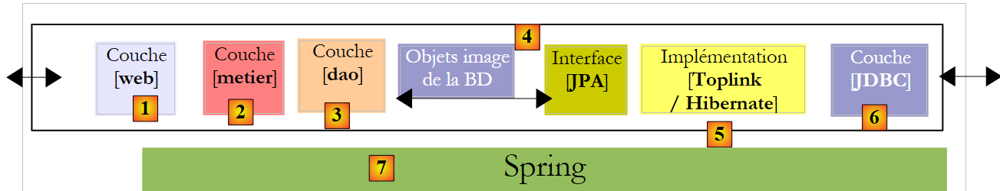 |
3.1. Exemple 1 : Spring / JPA avec entité Personne
Nous prenons l'entité Personne étudiée au paragraphe 2.1, et nous l'intégrons dans une architecture multi-couches où l'intégration des couches est faite avec Spring et la couche de persistance est implémentée par Hibernate.
 |
Le lecteur est ici supposé avoir des connaissances de base sur Spring. Si ce n'était pas le cas, on pourra lire le document suivant qui explique la notion d'injection de dépendances qui est au coeur de Spring :
[ref3] : Spring Ioc (Inversion Of Control) [http://tahe.developpez.com/java/springioc].
3.1.1. Le projet Eclipse / Spring / Hibernate
Le projet Eclipse est le suivant :
 |
 |
- en [1] : le projet Eclipse. Il sera trouvé en [6] dans les exemples du tutoriel [5]. On l'importera.
- en [2] : les codes Java des couches présentés en paquetages :
- [entites] : le paquetage des entités JPA
- [dao] : la couche d'accès aux données - s'appuie sur la couche JPA
- [service] : une couche de services plus que de métier. On y utilisera le service de transactions des conteneurs.
- [tests] : regroupe les programmes de tests.
- en [3] : la bibliothèque [jpa-spring] regroupe les jars nécessaires à Spring (voir aussi [7] et [8]).
- en [4] : le dossier [conf] rassemble les fichiers de configuration de Spring pour chacun des SGBD utilisés dans ce tutoriel.
3.1.2. Les entités JPA
 |
Il n'y a qu'une entité gérée ici, l'entité Personne étudiée au paragraphe 2.1, et dont nous rappelons ci-dessous la configuration :
package entites;
...
@Entity
@Table(name="jpa01_hb_personne")
public class Personne {
@Id
@Column(name = "ID", nullable = false)
@GeneratedValue(strategy = GenerationType.AUTO)
private Integer id;
@Column(name = "VERSION", nullable = false)
@Version
private int version;
@Column(name = "NOM", length = 30, nullable = false, unique = true)
private String nom;
@Column(name = "PRENOM", length = 30, nullable = false)
private String prenom;
@Column(name = "DATENAISSANCE", nullable = false)
@Temporal(TemporalType.DATE)
private Date datenaissance;
@Column(name = "MARIE", nullable = false)
private boolean marie;
@Column(name = "NBENFANTS", nullable = false)
private int nbenfants;
// constructeurs
public Personne() {
}
public Personne(String nom, String prenom, Date datenaissance, boolean marie,
int nbenfants) {
...
}
// toString
public String toString() {
return String.format("[%d,%d,%s,%s,%s,%s,%d]", getId(), getVersion(),
getNom(), getPrenom(), new SimpleDateFormat("dd/MM/yyyy")
.format(getDatenaissance()), isMarie(), getNbenfants());
}
// getters and setters
...
}
3.1.3. La couche [dao]
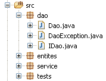 |  |
La couche [dao] présente l'interface IDao suivante :
package dao;
import java.util.List;
import entites.Personne;
public interface IDao {
// obtenir une personne via son identifiant
public Personne getOne(Integer id);
// obtenir toutes les personnes
public List<Personne> getAll();
// sauvegarder une personne
public Personne saveOne(Personne personne);
// mettre à jour une personne
public Personne updateOne(Personne personne);
// supprimer une personne via son identifiant
public void deleteOne(Integer id);
// obtenir les personnes dont le nom correspond àun modèle
public List<Personne> getAllLike(String modele);
}
L'implémentation [Dao] de cette interface est la suivante :
package dao;
import java.util.List;
import javax.persistence.EntityManager;
import javax.persistence.PersistenceContext;
import entites.Personne;
public class Dao implements IDao {
@PersistenceContext
private EntityManager em;
// supprimer une personne via son identifiant
public void deleteOne(Integer id) {
Personne personne = em.find(Personne.class, id);
if (personne == null) {
throw new DaoException(2);
}
em.remove(personne);
}
@SuppressWarnings("unchecked")
// obtenir toutes les personnes
public List<Personne> getAll() {
return em.createQuery("select p from Personne p").getResultList();
}
@SuppressWarnings("unchecked")
// obtenir les personnes dont le nom correspond àun modèle
public List<Personne> getAllLike(String modele) {
return em.createQuery("select p from Personne p where p.nom like :modele")
.setParameter("modele", modele).getResultList();
}
// obtenir une personne via son identifiant
public Personne getOne(Integer id) {
return em.find(Personne.class, id);
}
// sauvegarder une personne
public Personne saveOne(Personne personne) {
em.persist(personne);
return personne;
}
// mettre à jour une personne
public Personne updateOne(Personne personne) {
return em.merge(personne);
}
}
- tout d'abord, on notera la simplicité de l'implémentation [Dao]. Celle-ci est due à l'utilisation de la couche JPA qui fait l'essentiel du travail d'accès aux données.
- ligne 10 : la classe [Dao] implémente l'interface [IDao]
- ligne 13 : l'objet de type [EntityManager] qui va être utilisé pour manipuler le contexte de persistance JPA. Par abus de langage, nous le confondrons parfois avec le contexte de persistance lui-même. Le contexte de persistance contiendra des entités Personne.
- ligne 12 : nulle part dans le code, le champ [EntityManager em] n'est initialisé. Il le sera au démarrage de l'application par Spring. C'est l'annotation JPA @PersistenceContext de la ligne 12 qui demande à Spring d'injecter dans em, un gestionnaire de contexte de persistance.
- lignes 26-28 : la liste de toutes les personnes est obtenue par une requête JPQL.
- lignes 32-35 : la liste de toutes les personnes ayant un nom correspondant à un certain modèle est obtenue par une requête JPQL.
- lignes 38-40 : la personne ayant tel identifiant est obtenue par la méthode find de l'API JPA. Rend un pointeur null si la personne n'existe pas.
- lignes 43-46 : une personne est rendue persistante par la méthode persist de l'API JPA. La méthode rend la personne persistante.
- lignes 49-51 : la mise à jour d'une personne est réalisée par la méthode merge de l'API JPA. Cette méthode n'a de sens que si la personne ainsi mise à jour était auparavant détachée. La méthode rend la personne persistante ainsi créée.
- lignes 16-22 : la suppression de la personne dont on nous passe l'identifiant en pramètre se fait en deux temps :
- ligne 17 : elle est cherchée dans le contexte de persistance
- lignes 18-20 : si on ne la trouve pas, on lance une exception avec un code erreur 2
- ligne 21 : si on l'a trouvée on l'enlève du contexte de persistance avec la méthode remove de l'API JPA.
- ce qui n'est pas visible pour l'instant est que chaque méthode sera exécutée au sein d'une transaction démarrée par la couche [service].
L'application a son propre type d'exception nommé [DaoException] :
package dao;
@SuppressWarnings("serial")
public class DaoException extends RuntimeException {
// code d'erreur
private int code;
public DaoException(int code) {
super();
this.code = code;
}
public DaoException(String message, int code) {
super(message);
this.code = code;
}
public DaoException(Throwable cause, int code) {
super(cause);
this.code = code;
}
public DaoException(String message, Throwable cause, int code) {
super(message, cause);
this.code = code;
}
// getter et setter
public int getCode() {
return code;
}
public void setCode(int code) {
this.code = code;
}
}
- ligne 4 : [DaoException] dérive de [RuntimeException]. C'est donc un type d'exceptions que le compilateur ne nous oblige pas à gérer par un try / catch ou à mettre dans la signture des méthodes. C'est pour cette raison, que [DaoException] n'est pas dans la signature de la méthode [deleteOne] de l'interface [IDao]. Cela permet à cette interface d'être implémentée par une classe lançant un autre type d'exceptions pourvu que celui-ci dérive égaleemnt de [RuntimeException].
- pour différencier les erreurs qui peuvent se produire, on utilise le code erreur de la ligne 7. Les trois constructeurs des lignes 14, 19 et 24 sont ceux de la classe parente [RuntimeException] auxquels on a rajouté un paramètre : celui du code d'erreur qu'on veut donner à l'exception.
3.1.4. La couche [metier / service]
 |
La couche [service] présente l'interface [IService] suivante :
package service;
import java.util.List;
import entites.Personne;
public interface IService {
// obtenir une personne via son identifiant
public Personne getOne(Integer id);
// obtenir toutes les personnes
public List<Personne> getAll();
// sauvegarder une personne
public Personne saveOne(Personne personne);
// mettre à jour une personne
public Personne updateOne(Personne personne);
// supprimer une personne via son identifiant
public void deleteOne(Integer id);
// obtenir les personnes dont le nom correspond àun modèle
public List<Personne> getAllLike(String modele);
// supprimer plusieurs personnes à la fois
public void deleteArray(Personne[] personnes);
// sauvegarder plusieurs personnes à la fois
public Personne[] saveArray(Personne[] personnes);
// metre à jour plusieurs personnes à la fois
public Personne[] updateArray(Personne[] personnes);
}
- lignes 8-24 : l'interface [IService] reprend les méthodes de l'interface [IDao]
- ligne 27 : la méthode [deleteArray] permet de supprimer un ensemble de personnes au sein d'une transaction : toutes les personnes sont supprimées ou aucune.
- lignes 30 et 33 : des méthodes analogues à [deleteArray] pour sauvegarder (ligne 30) ou mettre à jour (ligne 33) un ensemble de personnes au sein d'une transaction.
L'implémentation [Service] de l'interface [IService] est la suivante :
package service;
...
// ttes les méthodes de la classe se déroulent dans une transaction
@Transactional
public class Service implements IService {
// couche [dao]
private IDao dao;
public IDao getDao() {
return dao;
}
public void setDao(IDao dao) {
this.dao = dao;
}
// supprimer plusieurs personnes à la fois
public void deleteArray(Personne[] personnes) {
for (Personne p : personnes) {
dao.deleteOne(p.getId());
}
}
// supprimer une personne via son identifiant
public void deleteOne(Integer id) {
dao.deleteOne(id);
}
// obtenir toutes les personnes
public List<Personne> getAll() {
return dao.getAll();
}
// obtenir les personnes dont le nom correspond àun modèle
public List<Personne> getAllLike(String modele) {
return dao.getAllLike(modele);
}
// obtenir une personne via son identifiant
public Personne getOne(Integer id) {
return dao.getOne(id);
}
// sauvegarder plusieurs personnes à la fois
public Personne[] saveArray(Personne[] personnes) {
Personne[] personnes2 = new Personne[personnes.length];
for (int i = 0; i < personnes.length; i++) {
personnes2[i] = dao.saveOne(personnes[i]);
}
return personnes2;
}
// sauvegarder une personne
public Personne saveOne(Personne personne) {
return dao.saveOne(personne);
}
// metre à jour plusieurs personnes à la fois
public Personne[] updateArray(Personne[] personnes) {
Personne[] personnes2 = new Personne[personnes.length];
for (int i = 0; i < personnes.length; i++) {
personnes2[i] = dao.updateOne(personnes[i]);
}
return personnes2;
}
// mettre à jour une personne
public Personne updateOne(Personne personne) {
return dao.updateOne(personne);
}
}
- ligne 6 : l'annotation Spring @Transactional indique que toutes les méthodes de la classe doivent s'exécuter au sein d'une transaction. Une transaction sera commencée avant le début d'exécution de la méthode et fermée après exécution. Si une exception de type [RuntimeException] ou dérivé se produit au cours de l'exécution de la méthode, un rollback automatique annule toute la transaction, sinon un commit automatique la valide. On retiendra que le code Java n'a pas besoin de se soucier des transactions. Elles sont gérées par Spring.
- ligne 10 : une référence sur la couche [dao]. Nous verrons ultérieurement que cette référence est initialisée par Spring au démarrage de l'application.
- les méthodes de [Service] se contentent d'appeler les méthodes de l'interface [IDao dao] de la ligne 10. Nous laissons le lecteur prendre connaissance du code. Il n'y a pas de difficultés particulières.
- nous avons dit précédemment que chaque méthode de [Service] s'exécutait dans une transaction. Celle-ci est attachée au thread d'exécution de la méthode. Dans ce thread, sont exécutées des méthodes de la couche [dao]. Celles-ci seront automatiquement rattachées à la transaction du thread d'exécution. La méthode [deleteArray] (ligne 21), par exemple, est amenée à exécuter N fois la méthode [deleteOne] de la couche [dao]. Ces N exécutions se feront au sein du thread d'exécution de la méthode [deleteArray], donc au sein de la même transaction. Aussi seront-elles soit toutes validées (commit) si les choses se passent bien ou toutes annulées (rollback) si une exception se produit dans l'une des N exécutions de la méthode [deleteOne] de la couche [dao].
3.1.5. Configuration des couches
 |  |
La configuration des couches [service], [dao] et [JPA] est assurée par deux fichiers ci-dessus : [META-INF/persistence.xml] et [spring-config.xml]. Les deux fichiers doivent être dans le classpath de l'application, ce qui explique qu'ils soient dans le dossier [src] du projet Eclipse. Le nom du fichier [spring-config.xml] est libre.
persistence.xml
<?xml version="1.0" encoding="UTF-8"?>
<persistence version="1.0" xmlns="http://java.sun.com/xml/ns/persistence" xmlns:xsi="http://www.w3.org/2001/XMLSchema-instance"
xsi:schemaLocation="http://java.sun.com/xml/ns/persistence http://java.sun.com/xml/ns/persistence/persistence_1_0.xsd">
<persistence-unit name="jpa" transaction-type="RESOURCE_LOCAL" />
</persistence>
- ligne 4 : le fichier déclare une unité de persistance appelée jpa qui utilise des transactions "locales", c.a.d. non fournies par un conteneur EJB3. Ces transactions sont créées et gérées par Spring et font l'objet de configurations dans le fichier [spring-config.xml].
spring-config.xml
<?xml version="1.0" encoding="UTF-8"?>
<beans xmlns="http://www.springframework.org/schema/beans"
xmlns:xsi="http://www.w3.org/2001/XMLSchema-instance"
xmlns:tx="http://www.springframework.org/schema/tx"
xsi:schemaLocation="http://www.springframework.org/schema/beans http://www.springframework.org/schema/beans/spring-beans-2.0.xsd http://www.springframework.org/schema/tx http://www.springframework.org/schema/tx/spring-tx-2.0.xsd">
<!-- couches applicatives -->
<bean id="dao" class="dao.Dao" />
<bean id="service" class="service.Service">
<property name="dao" ref="dao" />
</bean>
<!-- couche de persistance JPA -->
<bean id="entityManagerFactory"
class="org.springframework.orm.jpa.LocalContainerEntityManagerFactoryBean">
<property name="dataSource" ref="dataSource" />
<property name="jpaVendorAdapter">
<bean
class="org.springframework.orm.jpa.vendor.HibernateJpaVendorAdapter">
<!--
<property name="showSql" value="true" />
-->
<property name="databasePlatform"
value="org.hibernate.dialect.MySQL5InnoDBDialect" />
<property name="generateDdl" value="true" />
</bean>
</property>
<property name="loadTimeWeaver">
<bean
class="org.springframework.instrument.classloading.InstrumentationLoadTimeWeaver" />
</property>
</bean>
<!-- la source de donnéees DBCP -->
<bean id="dataSource"
class="org.apache.commons.dbcp.BasicDataSource"
destroy-method="close">
<property name="driverClassName" value="com.mysql.jdbc.Driver" />
<property name="url" value="jdbc:mysql://localhost:3306/jpa" />
<property name="username" value="jpa" />
<property name="password" value="jpa" />
</bean>
<!-- le gestionnaire de transactions -->
<tx:annotation-driven transaction-manager="txManager" />
<bean id="txManager"
class="org.springframework.orm.jpa.JpaTransactionManager">
<property name="entityManagerFactory"
ref="entityManagerFactory" />
</bean>
<!-- traduction des exceptions -->
<bean
class="org.springframework.dao.annotation.PersistenceExceptionTranslationPostProcessor" />
<!-- annotations de persistance -->
<bean
class="org.springframework.orm.jpa.support.PersistenceAnnotationBeanPostProcessor" />
</beans>
- lignes 2-5 : la balise racine <beans> du fichier de configuration. Nous ne commentons pas les divers attributs de cette balise. On prendra soin de faire un copier / coller parce que se tromper dans l'un de ces attributs provoque des erreurs parfois difficiles à comprendre.
- ligne 8 : le bean "dao" est une référence sur une instance de la classe [dao.Dao]. Une instance unique sera créée (singleton) et implémentera la couche [dao] de l'application.
- lignes 9-11 : instanciation de la couche [service]. Le bean "service" est une référence sur une instance de la classe [service.Service]. Une instance unique sera créée (singleton) et implémentera la couche [service] de l'application. Nous avons vu que la classe [service.Service] avait un champ privé [IDao dao]. Ce champ est initialisé ligne 10 par le bean "dao" défini ligne 8.
- au final les lignes 8-11 ont configuré les couches [dao] et [service]. Nous verrons plus loin à quel moment et comment elles seront instanciées.
- lignes 35-42 : une source de données est définie. Nous avons déjà rencontré la notion de source de données lors de l'étude des entités JPA avec Hibernate :
 |
Ci-dessus, [c3p0] appelé "pool de connexions" aurait pu être appelé "source de données". Une source de données fournit le service de "pool de connexions". Avec Spring, nous utiliserons une source de données autre que [c3p0]. C'est [DBCP] du projet Apache commons DBCP [http://jakarta.apache.org/commons/dbcp/]. Les archives de [DBCP] ont été placées dans la bibliothèque utilisateur [jpa-spring] :
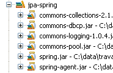 |
- lignes 38-41 : pour créer des connexions avec la base de données cible, la source de données a besoin de connaître le pilote Jdbc utilisé (ligne 38), l'url de la base de données (ligne 39), l'utilisateur de la connexion et son mot de passe (lignes 40-41).
- lignes 14-32 : configurent la couche JPA
- lignes 14-15 : définissent un bean de type [EntityManagerFactory] capable de créer des objets de type [EntityManager] pour gérer les contextes de persistance. La classe instanciée [LocalContainerEntityManagerFactoryBean] est fournie par Spring. Elle a besoin d'un certain nombre de paramètres pour s'instancier, définis lignes 16-31.
- ligne 16 : la source de données à utiliser pour obtenir des connexions au SGBD. C'est la source [DBCP] définie aux lignes 35-42.
- lignes 17-27 : l'implémentation JPA à utiliser
- lignes 18-26 : définissent Hibernate (ligne 19) comme implémentation JPA à utiliser
- lignes 23-24 : le dialecte SQL qu'Hibernate doit utiliser avec le SGBD cible, ici MySQL5.
- ligne 25 : demande qu'au démarrage de l'application, la base de données soit générée (drop et create).
- lignes 28-31 : définissent un "chargeur de classes". Je ne saurai pas expliquer de façon claire le rôle de ce bean utilisé par l'EntityManagerFactory de la couche JPA. Toujours est-il, qu'il implique de passer à la JVM qui exécute l'application, le nom d'une archive dont le contenu va gérer le chargement des classes au démarrage de l'application. Ici, cette archive est [spring-agent.jar] placée dans la bibliothèque utilisateur [jpa-spring] (voir plus haut). Nous verrons qu'Hibernate n'a pas besoin de cet agent mais que Toplink lui en a besoin.
- lignes 45-50 : définissent le gestionnaire de transactions à utiliser
- ligne 45 : indique que les transactions sont gérées avec des annotations Java (elles auraient pu être également déclarées dans spring-config.xml). C'est en particulier l'annotation @Transactional rencontrée dans la classe [Service] (ligne 6).
- lignes 46-50 : le gestionnaire de transactions
- ligne 47 : le gestionnaire de transactions est une classe fournie par Spring
- lignes 48-49 : le gestionnaire de transactions de Spring a besoin de connaître l'EntityManagerFactory qui gère la couche JPA. C'est celui défini aux lignes 14-32.
- lignes 57-58 : définissent la classe qui gère les annotations de persistance Spring trouvées dans le code Java, telles l'annotation @PersistenceContext de la classe [dao.Dao] (ligne 12).
- lignes 53-54 : définissent la classe Spring qui gère notamment l'annotation @Repository qui rend une classe ainsi annotée, éligible pour la traduction des exceptions natives du pilote Jdbc du SGBD en exceptions génériques Spring de type [DataAccessException]. Cette traduction encapsule l'exception Jdbc native dans un type [DataAccessException] ayant diverses sous-classes :

Cette traduction permet au programme client de gérer les exceptions de façon générique quelque soit le SGBD cible. Nous n'avons pas utilisé l'annotation @Repository dans notre code Java. Aussi les lignes 53-54 sont-elles inutiles. Nous les avons laissées par simple souci d'information.
Nous en avons fini avec le fichier de configuration de Spring. Il est complexe et bien des choses restent obscures. Il a été tiré de la documentation Spring. Heureusement, son adaptation à diverses situations se résume souvent à deux modifications :
- celle de la base de données cible : lignes 38-41. Nous donnerons un exemple Oracle.
- celle de l'implémentation JPA : lignes 14-32. Nous donnerons un exemple Toplink.
3.1.6. Programme client [InitDB]
Nous abordons l'écriture d'un premier client de l'architecture décrite précédemment :
 |
Le code de [InitDB] est le suivant :
package tests;
...
public class InitDB {
// couche service
private static IService service;
// constructeur
public static void main(String[] args) throws ParseException {
// configuration de l'application
ApplicationContext ctx = new ClassPathXmlApplicationContext("spring-config.xml");
// couche service
service = (IService) ctx.getBean("service");
// on vide la base
clean();
// on la remplit
fill();
// on vérifie visuellement
dumpPersonnes();
}
// affichage contenu table
private static void dumpPersonnes() {
System.out.format("[personnes]%n");
for (Personne p : service.getAll()) {
System.out.println(p);
}
}
// remplissage table
public static void fill() throws ParseException {
// création personnes
Personne p1 = new Personne("p1", "Paul", new SimpleDateFormat("dd/MM/yy").parse("31/01/2000"), true, 2);
Personne p2 = new Personne("p2", "Sylvie", new SimpleDateFormat("dd/MM/yy").parse("05/07/2001"), false, 0);
// qu'on sauvegarde
service.saveArray(new Personne[] { p1, p2 });
}
// supression éléments de la table
public static void clean() {
for (Personne p : service.getAll()) {
service.deleteOne(p.getId());
}
}
}
- ligne 12 : le fichier [spring-config.xml] est exploité pour créer un objet [ApplicationContext ctx] qui est une image mémoire du fichier. Les beans définis dans [spring-config.xml] sont instanciés à cette occasion.
- ligne 14 : on demande au contexte d'application ctx une référence sur la couche [service]. On sait que celle-ci est représentée par un bean s'appelant "service".
- ligne 16 : la base est vidée au moyen de la méthode clean des lignes 41-45 :
- lignes 42-44 : on demande la liste de toutes les personnes au contexte de persistance et on boucle sur elles pour les supprimer une à une. On se rappelle peut-être que [spring-config.xml] précise que la base de données doit être générée au démarrage de l'application. Aussi dans notre cas, l'appel de la méthode clean est inutile puisqu'on part d'une base vide.
- ligne 18 : la méthode fill remplit la base. Celle-ci est définie lignes 32-38 :
- lignes 34-35 : deux personnes sont créées
- ligne 37 : on demande à la couche [service] de les rendre persistantes.
- ligne 20 : la méthode dumpPersonnes affiche les personnes persistantes. Elle est définie aux lignes 24-29
- lignes 26-28 : on demande la liste de toutes les personnes persistantes à la couche [service] et on les affiche sur la console.
L'exécution de [InitDB] donne le résultat suivant :
3.1.7. Tests unitaires [TestNG]
L'installation du plugin [TestNG] est décrite au paragraphe 5.2.4. Le code du programme [TestNG] est le suivant :
package tests;
....
public class TestNG {
// couche service
private IService service;
@BeforeClass
public void init() {
// log
log("init");
// configuration de l'application
ApplicationContext ctx = new ClassPathXmlApplicationContext("spring-config.xml");
// couche service
service = (IService) ctx.getBean("service");
}
@BeforeMethod
public void setUp() throws ParseException {
// on vide la base
clean();
// on la remplit
fill();
}
// logs
private void log(String message) {
System.out.println("----------- " + message);
}
// affichage contenu table
private void dump() {
log("dump");
System.out.format("[personnes]%n");
for (Personne p : service.getAll()) {
System.out.println(p);
}
}
// remplissage table
public void fill() throws ParseException {
log("fill");
// création personnes
Personne p1 = new Personne("p1", "Paul", new SimpleDateFormat("dd/MM/yy").parse("31/01/2000"), true, 2);
Personne p2 = new Personne("p2", "Sylvie", new SimpleDateFormat("dd/MM/yy").parse("05/07/2001"), false, 0);
// qu'on sauvegarde
service.saveArray(new Personne[] { p1, p2 });
}
// supression éléments de la table
public void clean() {
log("clean");
for (Personne p : service.getAll()) {
service.deleteOne(p.getId());
}
}
@Test()
public void test01() {
...
}
...
}
- ligne 9 : l'annotation @BeforeClass désigne la méthode à exécuter pour initialiser la configuration nécessaire aux tests. Elle est exécutée avant que le premier test ne soit exécuté. L'annotation @AfterClass non utilisée ici, désigne la méthode à exécuter une fois que tous les tests ont été exécutés.
- lignes 10-17 : la méthode init annotée par @BeforeClass exploite le fichier de configuration de Spring pour instancier les différentes couches de l'application et avoir une référence sur la couche [service]. Tous les tests utilisent ensuite cette référence.
- ligne 19 : l'annotation @BeforeMethod désigne la méthode à exécuter avant chaque test. L'annotation @AfterMethod, non utilisée ici, désigne la méthode à exécuter après chaque test.
- lignes 20-25 : la méthode setUp annotée par @BeforeMethod vide la base (clean lignes 52-56) puis la remplit avec deux personnes (fill lignes 42-49).
- ligne 59 : l'annotation @Test désigne une méthode de test à exécuter. Nous décrivons maintenant ces tests.
@Test()
public void test01() {
log("test1");
dump();
// liste des personnes
List<Personne> personnes = service.getAll();
assert 2 == personnes.size();
}
@Test()
public void test02() {
log("test2");
// recherche de personnes par leur nom
List<Personne> personnes = service.getAllLike("p1%");
assert 1 == personnes.size();
Personne p1 = personnes.get(0);
assert "Paul".equals(p1.getPrenom());
}
@Test()
public void test03() throws ParseException {
log("test3");
// création d'une nouvelle personne
Personne p3 = new Personne("p3", "x", new SimpleDateFormat("dd/MM/yy").parse("05/07/2001"), false, 0);
// on la persiste
service.saveOne(p3);
// on la redemande
Personne loadedp3 = service.getOne(p3.getId());
// on l'affiche
System.out.println(loadedp3);
// vérification
assert "p3".equals(loadedp3.getNom());
}
- lignes 2-8 : le test 01. Il faut se rappeler qu'au départ de chaque test, la base contient deux personnes de noms respectifs p1 et p2.
- ligne 6 : on demande la liste des personnes
- lignes 7 : on vérifie que le nombre de personnes de la liste obtenue est 2
- ligne 14 : on demande la liste des personnes ayant un nom commençant par p1
- on vérifie que la liste obtenue n'a qu'un élément (ligne 15) et que le prénom de l'unique personne obtenue est "Paul" (ligne 17)
- ligne 24 : on crée une personne nommée p3
- ligne 25 : on la persiste
- ligne 28 : on la redemande au contexte de persistance pour vérification
- ligne 32 : on vérifie que la personne obtenue a bien le nom p3.
@Test()
public void test04() throws ParseException {
log("test4");
// on charge la personne p1
List<Personne> personnes = service.getAllLike("p1%");
Personne p1 = personnes.get(0);
// on l'affiche
System.out.println(p1);
// on vérifie
assert "p1".equals(p1.getNom());
int version1 = p1.getVersion();
// on modifie le prénom
p1.setPrenom("x");
// on sauvegarde
service.updateOne(p1);
// on recharge
p1 = service.getOne(p1.getId());
// on l'affiche
System.out.println(p1);
// on vérifie que la version a été incrémentée
assert (version1 + 1) == p1.getVersion();
}
- ligne 5 : on demande la personne p1
- ligne 10 : on vérifie son nom
- ligne 11 : on note son n° de version
- ligne 13 : on modifie son prénom
- ligne 15 : on sauvegarde la modification
- ligne 17 : on redemande la personne p1
- ligne 21 : on vérifie que son n° de version a augmenté de 1
@Test()
public void test05() {
log("test5");
// on charge la personne p2
List<Personne> personnes = service.getAllLike("p2%");
Personne p2 = personnes.get(0);
// on l'affiche
System.out.println(p2);
// on vérifie
assert "p2".equals(p2.getNom());
// on supprime la personne p2
service.deleteOne(p2.getId());
// on la recharge
p2 = service.getOne(p2.getId());
// on vérifie qu'on a obtenu un pointeur null
assert null == p2;
// on affiche la table
dump();
}
- ligne 5 : on demande la personne p2
- ligne 10 : on vérifie son nom
- ligne 12 : on la supprime
- ligne 14 : on la redemande
- ligne 16 : on vérifie qu'on ne l'a pas trouvée
@Test()
public void test06() throws ParseException {
log("test6");
// on crée un tableau de 2 personnes de même nom (enfreint la règle d'unicité du nom)
Personne[] personnes = { new Personne("p3", "x", new SimpleDateFormat("dd/MM/yy").parse("31/01/2000"), true, 2),
new Personne("p4", "x", new SimpleDateFormat("dd/MM/yy").parse("31/01/2000"), true, 2),
new Personne("p4", "x", new SimpleDateFormat("dd/MM/yy").parse("31/01/2000"), true, 2)};
// on sauvegarde ce tableau - on doit obtenir une exception et un rollback
boolean erreur = false;
try {
service.saveArray(personnes);
} catch (RuntimeException e) {
erreur = true;
}
// dump
dump();
// vérifications
assert erreur;
// recherche personne de nom p3
List<Personne> personnesp3 = service.getAllLike("p3%");
assert 0 == personnesp3.size();
// dump
dump();
}
- ligne 5 : on crée un tableau de trois personnes dont deux ont le même nom "p4". Cela enfreint la règle d'unicité du nom de l'@Entity Personne :
@Column(name = "NOM", length = 30, nullable = false, unique = true)
private String nom;
- ligne 11 : le tableau des trois personnes est mis dans le contexte de persistance. L'ajout de la seconde personne p4 devrait échouer. Comme la méthode [saveArray] se déroule dans une transaction, toutes les insertions qui ont pu être faites avant seront annulées. Au final, aucun ajout ne sera fait.
- ligne 18 : on vérifie que [saveArray] a bien lancé une exception
- lignes 20-21 : on vérifie que la personne p3 qui aurait pu être ajoutée ne l'a pas été.
@Test()
public void test07() {
log("test7");
// test optimistic locking
// on charge la personne p1
List<Personne> personnes = service.getAllLike("p1%");
Personne p1 = personnes.get(0);
// on l'affiche
System.out.println(p1);
// on augmente son nbre d'enfants
int nbEnfants1 = p1.getNbenfants();
p1.setNbenfants(nbEnfants1 + 1);
// on sauvegarde p1
Personne newp1 = service.updateOne(p1);
assert (nbEnfants1 + 1) == newp1.getNbenfants();
System.out.println(newp1);
// on sauvegarde une deuxième fois - on doit avoir une exception car p1 n'a plus la bonne version
// c'est newp1 qui l'a
boolean erreur = false;
try {
service.updateOne(p1);
} catch (RuntimeException e) {
erreur = true;
}
// vérification
assert erreur;
// on augmente le nbre d'enfants de newp1
int nbEnfants2 = newp1.getNbenfants();
newp1.setNbenfants(nbEnfants2 + 1);
// on sauvegarde newp1
service.updateOne(newp1);
// on recharge
p1 = service.getOne(p1.getId());
// on vérifie
assert (nbEnfants1 + 2) == p1.getNbenfants();
System.out.println(p1);
}
- ligne 6 : on demande la personne p1
- ligne 12 : on augmente de 1 son nombre d'enfants
- ligne 14 : on met à jour la personne p1 dans le contexte de persistance. La méthode [updateOne] rend la nouvelle version newp1 persistante de p1. Elle diffère de p1 par son n° de version qui a du être incrémenté.
- ligne 15 : on vérifie le nombre d'enfants de newp1.
- ligne 21 : on redemande une mise à jour de la personne p1 à partir de l'ancienne version p1. On doit avoir une exception car p1 n'est pas la dernière version de la personne p1. Cette dernière version est newp1.
- ligne 23 : on vérifie que l'erreur a bien eu lieu
- lignes 27-35 : on vérifie que si une mise à jour est faite à partir de la dernière version newp1, alors les choses se passent bien.
@Test()
public void test08() {
log("test8");
// test rollback sur updateArray
// on charge la personne p1
List<Personne> personnes = service.getAllLike("p1%");
Personne p1 = personnes.get(0);
// on l'affiche
System.out.println(p1);
// on augmente son nbre d'enfants
int nbEnfants1 = p1.getNbenfants();
p1.setNbenfants(nbEnfants1 + 1);
// on sauvegarde 2 modifications dont la 2ième doit échouer (personne mal initialisée)
// à cause de la transaction, les deux doivent alors être annulées
boolean erreur = false;
try {
service.updateArray(new Personne[] { p1, new Personne() });
} catch (RuntimeException e) {
erreur = true;
}
// vérifications
assert erreur;
// on recharge la personne p1
personnes = service.getAllLike("p1%");
p1 = personnes.get(0);
// son nbre d'enfants n'a pas du changer
assert nbEnfants1 == p1.getNbenfants();
}
- le test 8 est similaire au test 6 : il vérifie le rollback sur un updateArray opérant sur un tableau de deux personnes où la deuxième n'a pas été initialisée correctement. D'un point de vue JPA, l'opération merge sur la seconde personne qui n'existe pas déjà va générer un ordre SQL insert qui va échouer à cause des contraintes nullable=false qui existe sur certains des champs de l'entité Personne.
@Test()
public void test09() {
log("test9");
// test rollback sur deleteArray
// dump
dump();
// on charge la personne p1
List<Personne> personnes = service.getAllLike("p1%");
Personne p1 = personnes.get(0);
// on l'affiche
System.out.println(p1);
// on fait 2 suppressions dont la 2ième doit échouer (personne inconnue)
// à cause de la transaction, les deux doivent alors être annulées
boolean erreur = false;
try {
service.deleteArray(new Personne[] { p1, new Personne() });
} catch (RuntimeException e) {
erreur = true;
}
// vérifications
assert erreur;
// on recharge la personne p1
personnes = service.getAllLike("p1%");
// vérification
assert 1 == personnes.size();
// dump
dump();
}
- le test 9 est similaire au précédent : il vérifie le rollback sur un deleteArray opérant sur un tableau de deux personnes où la deuxième n'existe pas. Or dans ce cas, la méthode [deleteOne] de la couche [dao] lance une exception.
// optimistic locking - accès multi-threads
@Test()
public void test10() throws Exception {
// ajout d'une personne
Personne p3 = new Personne("X", "X", new SimpleDateFormat("dd/MM/yyyy").parse("01/02/2006"), true, 0);
service.saveOne(p3);
int id3 = p3.getId();
// création de N threads de mise à jour du nombre d'enfants
final int N = 20;
Thread[] taches = new Thread[N];
for (int i = 0; i < taches.length; i++) {
taches[i] = new ThreadMajEnfants("thread n° " + i, service, id3);
taches[i].start();
}
// on attend la fin des threads
for (int i = 0; i < taches.length; i++) {
taches[i].join();
}
// on récupère la personne
p3 = service.getOne(id3);
// elle doit avoir N enfants
assert N == p3.getNbenfants();
// suppression personne p3
service.deleteOne(p3.getId());
// vérification
p3 = service.getOne(p3.getId());
// on doit avoir un pointeur null
assert p3 == null;
}
- l'idée du test 10 est de lancer N threads (ligne 9) pour incrémenter en parallèle le nombre d'enfants d'une personne. On veut vérifier que le système du n° de version résiste bien à ce cas de figure. Il a été créé pour cela.
- lignes 5-6 : une personne nommée p3 est créée puis persistée. Elle a 0 enfant au départ.
- ligne 7 : on note son identifiant.
- lignes 9-14 : on lance N threads en parallèle, tous chargés d'incrémenter de 1 le nombre d'enfants de p3.
- lignes 16-18 : on attend la fin de tous les threads
- ligne 20 : on demande à voir la personne p3
- ligne 22 : on vérifie qu'elle a maintenant N enfants
- ligne 24 : la personne p3 est supprimée.
Le thread [ThreadMajEnfants] est le suivant :
package tests;
...
public class ThreadMajEnfants extends Thread {
// nom du thread
private String name;
// référence sur la couche [service]
private IService service;
// l'id de la personne sur qui on va travailler
private int idPersonne;
// constructeur
public ThreadMajEnfants(String name, IService service, int idPersonne) {
this.name = name;
this.service = service;
this.idPersonne = idPersonne;
}
// coeur du thread
public void run() {
// suivi
suivi("lancé");
// on boucle tant qu'on n'a pas réussi à incrémenter de 1
// le nbre d'enfants de la personne idPersonne
boolean fini = false;
int nbEnfants = 0;
while (!fini) {
// on récupère une copie de la personne d'idPersonne
Personne personne = service.getOne(idPersonne);
nbEnfants = personne.getNbenfants();
// suivi
suivi("" + nbEnfants + " -> " + (nbEnfants + 1) + " pour la version " + personne.getVersion());
// incrémente de 1 le nbre d'enfants de la personne
personne.setNbenfants(nbEnfants + 1);
// attente de 10 ms pour abandonner le processeur
try {
// suivi
suivi("début attente");
// on s'interrompt pour laisser le processeur
Thread.sleep(10);
// suivi
suivi("fin attente");
} catch (Exception ex) {
throw new RuntimeException(ex.toString());
}
// attente terminée - on essaie de valider la copie
// entre-temps d'autres threads ont pu modifier l'original
try {
// on essaie de modifier l'original
service.updateOne(personne);
// on est passé - l'original a été modifié
fini = true;
} catch (javax.persistence.OptimisticLockException e) {
// version de l'objet incorrecte : on ignore l'exception pour recommencer
} catch (org.springframework.transaction.UnexpectedRollbackException e2) {
// exception Spring qui surgit de temps en temps
} catch (RuntimeException e3) {
// autre type d'exception - on la remonte
throw e3;
}
}
// suivi
suivi("a terminé et passé le nombre d'enfants à " + (nbEnfants + 1));
}
// suivi
private void suivi(String message) {
System.out.println(name + " [" + new Date().getTime() + "] : " + message);
}
}
- lignes 15-19 : le constructeur mémorise les informations dont il a besoin pour travailler : son nom (ligne 16), la référence sur la couche [service] qu'il doit utiliser (ligne 17) et l'identifiant de la personne p dont il doit incrémenter le nombre d'enfants (ligne 18).
- lignes 22-66 : la méthode [run] exécutée par tous les threads en parallèle.
- ligne 29 : le thread essaie de façon répétée d'incrémenter le nombre d'enfants de la personne p. Il ne s'arrête que lorsqu'il a réussi.
- ligne 31 : la personne p est demandée
- ligne 36 : son nombre d'enfants est incrémenté en mémoire
- lignes 38-47 : on fait une pause de 10 ms. Cela va permettre à d'autres threads d'obtenir la même version de la personne p. On aura donc au même moment plusieurs threads détenant la même version de la personne p et voulant la modifier. C'est ce qui est désiré.
- ligne 52 : une fois la pause terminée, le thread demande à la couche [service] de persister la modification. On sait qu'il y aura de temps en temps des exceptions, aussi a-t-on entouré l'opération d'un try / catch.
- ligne 55 : les tests montrent qu'on a des exceptions de type [javax.persistence.OptimisticLockException]. C'est normal : c'est l'exception lancée par la couche JPA lorsqu'un thread veut modifier la personne p sans avoir la dernière version de celle-ci. Cette exception est ignorée pour laisser le thread tenter de nouveau l'opération jusqu'à ce qu'il y arrive.
- ligne 57 : les tests montrent qu'on a également des exceptions de type [org.springframework.transaction.UnexpectedRollbackException]. C'est ennuyeux et inattendu. Je n'ai pas d'explications à donner. Nous voilà dépendants de Spring alors qu'on aurait voulu éviter cela. Cela signifie que si on exécute notre application dans JBoss Ejb3 par exemple, le code du thread devra être changé. L'exception Spring est ici aussi ignorée pour laisser le thread tenter de nouveau l'opération d'incrémentation.
- ligne 59 : les autres types d'exception sont remontés à l'application.
Lorsque [TestNG] est exécuté on obtient les résultats suivants :

Les 10 tests ont été passés avec succès.
Le test 10 mérite des explications complémentaires parce que le fait qu'il ait réussi a un côté magique. Revenons tout d'abord sur la configuration de la couche [dao] :
public class Dao implements IDao {
@PersistenceContext
private EntityManager em;
- ligne 4 : un objet [EntityManager] est injecté dans le champ em grâce à l'annotation JPA @PersistenceContext. La couche [dao] est instanciée une unique fois. C'est un singleton utilisé par tous les threads utilisant la couche JPA. Ainsi donc l'EntityManager em est-il commun à tous les threads. On peut le vérifier en affichant la valeur de em dans la méthode [updateOne] utilisée par les threads [ThreadMajEnfants] : on a la même valeur pour tous les threads.
Du coup, on peut se demander si les objets persistants des différents threads manipulés par l'EntityManager em qui est le même pour tous les threads, ne vont pas se mélanger et créer des conflits entre-eux. Un exemple de ce qui pourrait se passer se trouve dans [ThreadMajEnfants] :
while (!fini) {
// on récupère une copie de la personne d'idPersonne
Personne personne = service.getOne(idPersonne);
nbEnfants = personne.getNbenfants();
// suivi
suivi("" + nbEnfants + " -> " + (nbEnfants + 1) + " pour la version " + personne.getVersion());
// incrémente de 1 le nbre d'enfants de la personne
personne.setNbenfants(nbEnfants + 1);
// attente de 10 ms pour abandonner le processeur
try {
// suivi
suivi("début attente");
// on s'interrompt pour laisser le processeur
Thread.sleep(10);
// suivi
suivi("fin attente");
} catch (Exception ex) {
throw new RuntimeException(ex.toString());
}
- ligne 3 : un thread T1 récupère la personne p
- ligne 8 : elle incrémente le nombre d'enfants de p
- ligne 14 : le thread T1 fait une pause
Un thread T2 prend la main et exécute lui aussi la ligne 3 : il demande la même personne p que T1. Si le contexte de persistance des threads était le même, la personne p étant déjà dans le contexte grâce à T1 devrait être rendue à T2. En effet, la méthode [getOne] utilise la méthode [EntityManager].find de l'API JPA et cette méthode ne fait un accès à la base que si l'objet demandé ne fait pas partie du contexte de persistance, sinon elle rend l'objet du contexte de persistance. Si tel était le cas, T1 et T2 détiendraient la même personne p. T2 incrémenterait alors le nombre d'enfants de p de 1 de nouveau (ligne 8). Si l'un des threads réussit sa mise à jour après la pause, alors le nombre d'enfants de p aura été augmenté de 2 et non de 1 comme prévu. On pourrait alors s'attendre à ce que les N threads passent le nombre d'enfants non pas à N mais à davantage. Or ce n'est pas le cas. On peut alors conclure que T1 et T2 n'ont pas la même référence p. On le vérifie en faisant afficher l'adresse de p par les threads : elle est différente pour chacun d'eux.
Il semblerait donc que les threads :
- partagent le même gestionnaire de contexte de persistance (EntityManager)
- mais ont chacun un contexte de persistance qui leur est propre.
Ce ne sont que des suppositions et l'avis d'un expert serait utile ici.
3.1.8. Changer de SGBD
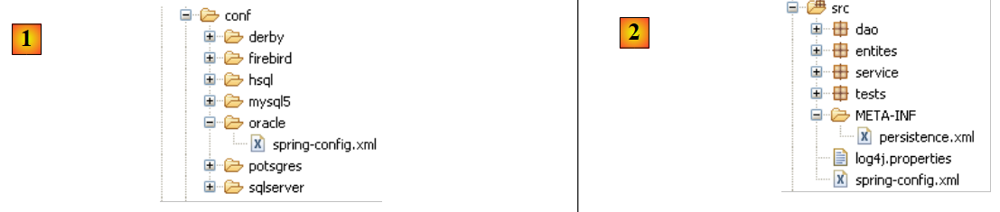 |
Pour changer de SGBD, il suffit de remplacer le fichier [src/spring-config.xml] [2] par le fichier [spring-config.xml] du SGBD concerné du dossier [conf] [1].
Le fichier [spring-config.xml] d'Oracle est, par exemple, le suivant :
<?xml version="1.0" encoding="UTF-8"?>
<beans xmlns="http://www.springframework.org/schema/beans" xmlns:xsi="http://www.w3.org/2001/XMLSchema-instance"
xmlns:tx="http://www.springframework.org/schema/tx"
xsi:schemaLocation="http://www.springframework.org/schema/beans http://www.springframework.org/schema/beans/spring-beans-2.0.xsd http://www.springframework.org/schema/tx http://www.springframework.org/schema/tx/spring-tx-2.0.xsd">
...
<bean id="entityManagerFactory" class="org.springframework.orm.jpa.LocalContainerEntityManagerFactoryBean">
<property name="dataSource" ref="dataSource" />
<property name="jpaVendorAdapter">
<bean class="org.springframework.orm.jpa.vendor.HibernateJpaVendorAdapter">
<!--
<property name="showSql" value="true" />
-->
<property name="databasePlatform" value="org.hibernate.dialect.OracleDialect" />
<property name="generateDdl" value="true" />
</bean>
</property>
<property name="loadTimeWeaver">
<bean class="org.springframework.instrument.classloading.InstrumentationLoadTimeWeaver" />
</property>
</bean>
<!-- la source de donnéees DBCP -->
<bean id="dataSource" class="org.apache.commons.dbcp.BasicDataSource" destroy-method="close">
<property name="driverClassName" value="oracle.jdbc.OracleDriver" />
<property name="url" value="jdbc:oracle:thin:@localhost:1521:xe" />
<property name="username" value="jpa" />
<property name="password" value="jpa" />
</bean>
...
</beans>
Seules certaines lignes changent vis à vis du même fichier utilisé précédemment pour MySQL5 :
- ligne 14 : le dialecte SQL qu'Hibernate doit utiliser
- lignes 25-28 : les caractéristiques de la connexion Jdbc avec le SGBD
Le lecteur est invité à répéter les tests décrits pour MySQL5 avec d'autres SGBD.
3.1.9. Changer d'implémentation JPA
Revenons à l'architecture des tests précédents :
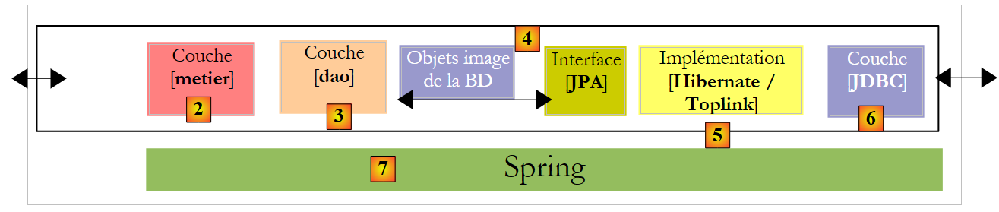 |
Nous remplaçons l'implémentation JPA / Hibernate par une implémentation JPA / Toplink. Toplink n'utilisant pas les mêmes bibliothèques qu'Hibernate, nous utilisons un nouveau projet Eclipse :
 |
- en [1] : le projet Eclipse. Il est identique au précédent. Seuls changent le fichier de configuration [spring-config.xml] [2] et la bibliothèque [jpa-toplink] qui remplace la bibliothèque [jpa-hibernate].
- en [3] : le dossier des exemples de ce tutoriel. En [4] le projet Eclipse à importer.
Le fichier de configuration [spring-config.xml] pour Toplink devient le suivant :
<?xml version="1.0" encoding="UTF-8"?>
<!-- la JVM doit être lancée avec l'argument -javaagent:C:\data\2006-2007\eclipse\dvp-jpa\lib\spring\spring-agent.jar
(à remplacer par le chemin exact de spring-agent.jar)-->
<beans xmlns="http://www.springframework.org/schema/beans" xmlns:xsi="http://www.w3.org/2001/XMLSchema-instance"
xmlns:tx="http://www.springframework.org/schema/tx"
xsi:schemaLocation="http://www.springframework.org/schema/beans http://www.springframework.org/schema/beans/spring-beans-2.0.xsd http://www.springframework.org/schema/tx http://www.springframework.org/schema/tx/spring-tx-2.0.xsd">
<!-- couches applicatives -->
<bean id="dao" class="dao.Dao" />
<bean id="service" class="service.Service">
<property name="dao" ref="dao" />
</bean>
<bean id="entityManagerFactory" class="org.springframework.orm.jpa.LocalContainerEntityManagerFactoryBean">
<property name="dataSource" ref="dataSource" />
<property name="jpaVendorAdapter">
<bean class="org.springframework.orm.jpa.vendor.TopLinkJpaVendorAdapter">
<!--
<property name="showSql" value="true" />
-->
<property name="databasePlatform" value="oracle.toplink.essentials.platform.database.MySQL4Platform" />
<property name="generateDdl" value="true" />
</bean>
</property>
<property name="loadTimeWeaver">
<bean class="org.springframework.instrument.classloading.InstrumentationLoadTimeWeaver" />
</property>
</bean>
<!-- la source de donnéees DBCP -->
<bean id="dataSource" class="org.apache.commons.dbcp.BasicDataSource" destroy-method="close">
<property name="driverClassName" value="com.mysql.jdbc.Driver" />
<property name="url" value="jdbc:mysql://localhost:3306/jpa" />
<property name="username" value="jpa" />
<property name="password" value="jpa" />
</bean>
<!-- le gestionnaire de transactions -->
<tx:annotation-driven transaction-manager="txManager" />
<bean id="txManager" class="org.springframework.orm.jpa.JpaTransactionManager">
<property name="entityManagerFactory" ref="entityManagerFactory" />
</bean>
<!-- traduction des exceptions -->
<bean class="org.springframework.dao.annotation.PersistenceExceptionTranslationPostProcessor" />
<!-- persistance -->
<bean class="org.springframework.orm.jpa.support.PersistenceAnnotationBeanPostProcessor" />
</beans>
Peu de lignes doivent être changées pour passer d'Hibernate à Toplink :
- ligne 19 : l'implémentation JPA est désormais faite par Toplink
- ligne 23 : la propriété [databasePlatform] a une autre valeur qu'avec Hibernate : le nom d'une classe propre à Toplink. Où trouver ce nom a été expliqué au paragraphe 2.1.15.2.
C'est tout. On notera la facilité avec laquelle on peut changer de SGBD ou d'implémentation JPA avec Spring.
On n'a quand même pas tout a fait fini. Lorsqu'on exécute [InitDB] par exemple, on a une exception pas simple à comprendre :
Exception in thread "main" org.springframework.beans.factory.BeanCreationException: Error creating bean with name 'entityManagerFactory' defined in class path resource [spring-config.xml]: Invocation of init method failed; nested exception is java.lang.IllegalStateException: Must start with Java agent to use InstrumentationLoadTimeWeaver. See Spring documentation.
Caused by: java.lang.IllegalStateException: Must start with Java agent to use
Le message d'erreur de la ligne 1 incite à lire la documentation Spring. On y découvre alors un peu plus le rôle joué par une déclaration obscure du fichier [spring-config.xml] :
<bean id="entityManagerFactory" class="org.springframework.orm.jpa.LocalContainerEntityManagerFactoryBean">
<property name="dataSource" ref="dataSource" />
<property name="jpaVendorAdapter">
<bean class="org.springframework.orm.jpa.vendor.HibernateJpaVendorAdapter">
<!--
<property name="showSql" value="true" />
-->
<property name="databasePlatform" value="org.hibernate.dialect.OracleDialect" />
<property name="generateDdl" value="true" />
</bean>
</property>
<property name="loadTimeWeaver">
<bean class="org.springframework.instrument.classloading.InstrumentationLoadTimeWeaver" />
</property>
</bean>
La ligne 1 de l'exception fait référence à une classe nommée [InstrumentationLoadTimeWeaver], classe que l'on retrouve ligne 13 du fichier de configuration Spring. La documentation Spring explique que cette classe est nécessaire dans certains cas pour charger les classes de l'application et que pour qu'elle soit exploitée, la JVM doit être lancée avec un agent. Cet agent est fourni par Spring et s'appelle [spring-agent] :
 |
- le fichier [spring-agent.jar] est dans le dossier <exemples>/lib [1]. Il est fourni avec la distribution Spring 2.x (cf paragraphe 5.11).
- en [3], on crée une configuration d'exécution [Run/Run...]
- en [4], on crée une configuration d'exécution Java (il y a diverses sortes de configurations d'exécution)
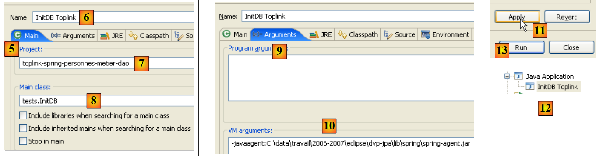 |
- en [5], on choisit l'onglet [Main]
- en [6], on donne un nom à la configuration
- en [7], on nomme le projet Eclipse concerné par cette configuration (utiliser le bouton Browse)
- en [8], on nomme la classe Java qui contient la méthode [main] (utiliser le bouton Browse)
- en [9], on passe dans l'onglet [Arguments]. Dans celui-ci on peut préciser deux types d'arguments :
- en [9], ceux passés à la méthode [main]
- en [10], ceux passés à la JVM qui va exécuter le code. L'agent Spring est défini à l'aide du paramètre -javaagent:valeur de la JVM. La valeur est le chemin du fichier [spring-agent.jar].
- en [11] : on valide la configuration
- en [12] : la configuration est créée
- en [13] : on l'exécute
Ceci fait, [InitDB] s'exécute et donne les mêmes résultats qu'avec Hibernate. Pour [TestNG], il faut procéder de la même façon :
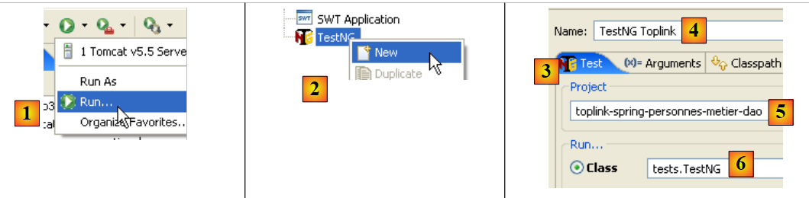 |
- en [1], on crée une configuration d'exécution [Run/Run...]
- en [2], on crée une configuration d'exécution TestNG
- en [3], on choisit l'onglet [Test]
- en [4], on donne un nom à la configuration
- en [5], on nomme le projet Eclipse concerné par cette configuration (utiliser le bouton Browse)
- en [6], on nomme la classe des tests (utiliser le bouton Browse)
 |
- en [7], on passe dans l'onglet [Arguments].
- en [8] : on fixe l'argument -javaagent de la JVM.
- en [9] : on valide la configuration
- en [10] : la configuration est créée
- en [11] : on l'exécute
Ceci fait, [TestNG] s'exécute et donne les mêmes résultats qu'avec Hibernate.
3.2. Exemple 2 : JBoss EJB3 / JPA avec entité Personne
Nous reprenons le même exemple que précédemment, mais nous l'exécutons dans un conteneur EJB3, celui de JBoss :
 |
Un conteneur Ejb3 est normalement intégré à un serveur d'application. JBoss délivre un conteneur Ejb3 "standalone" utilisable hors d'un serveur d'application. Nous allons découvrir qu'il délivre des services analogues à ceux délivrés par Spring. Nous essaierons de voir lequel de ces conteneurs se montre le plus pratique.
L'installation du conteneur JBoss Ejb3 est décrite au paragraphe 5.12.
3.2.1. Le projet Eclipse / Jboss Ejb3 / Hibernate
Le projet Eclipse est le suivant :
 |
 |
- en [1] : le projet Eclipse. Il sera trouvé en [6] dans les exemples du tutoriel [5]. On l'importera.
- en [2] : les codes Java des couches présentés en paquetages :
- [entites] : le paquetage des entités JPA
- [dao] : la couche d'accès aux données - s'appuie sur la couche JPA
- [service] : une couche de services plus que de métier. On y utilisera le service de transactions du conteneur Ejb3.
- [tests] : regroupe les programmes de tests.
- en [3] : la bibliothèque [jpa-jbossejb3] regroupe les jars nécessaires à Jboss Ejb3 (voir aussi [7] et [8]).
- en [4] : le dossier [conf] rassemble les fichiers de configuration pour chacun des SGBD utilisés dans ce tutoriel. Il y en a à chaque fois deux : [persistence.xml] qui configure la couche JPA et [jboss-config.xml] qui configure le conteneur Ejb3.
3.2.2. Les entités JPA
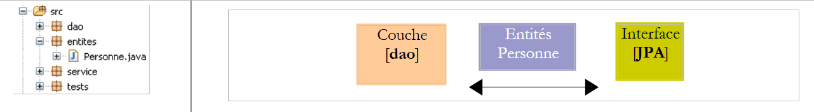 |
Il n'y a qu'une entité gérée ici, l'entité Personne étudiée précédemment au paragraphe 3.1.2.
3.2.3. La couche [dao]
 |
La couche [dao] présente l'interface [IDao] décrite précédemment au paragraphe 3.1.3.
L'implémentation [Dao] de cette interface est la suivante :
package dao;
...
@Stateless
public class Dao implements IDao {
@PersistenceContext
private EntityManager em;
// supprimer une personne via son identifiant
@TransactionAttribute(TransactionAttributeType.REQUIRED)
public void deleteOne(Integer id) {
Personne personne = em.find(Personne.class, id);
if (personne == null) {
throw new DaoException(2);
}
em.remove(personne);
}
// obtenir toutes les personnes
@TransactionAttribute(TransactionAttributeType.REQUIRED)
public List<Personne> getAll() {
return em.createQuery("select p from Personne p").getResultList();
}
// obtenir les personnes dont le nom correspond àun modèle
@TransactionAttribute(TransactionAttributeType.REQUIRED)
public List<Personne> getAllLike(String modele) {
return em.createQuery("select p from Personne p where p.nom like :modele")
.setParameter("modele", modele).getResultList();
}
// obtenir une personne via son identifiant
@TransactionAttribute(TransactionAttributeType.REQUIRED)
public Personne getOne(Integer id) {
return em.find(Personne.class, id);
}
// sauvegarder une personne
@TransactionAttribute(TransactionAttributeType.REQUIRED)
public Personne saveOne(Personne personne) {
em.persist(personne);
return personne;
}
// mettre à jour une personne
@TransactionAttribute(TransactionAttributeType.REQUIRED)
public Personne updateOne(Personne personne) {
return em.merge(personne);
}
}
- ce code est en tout point identique à celui qu'on avait avec Spring. Seules les annotations Java changent et c'est cela que nous commentons.
- ligne 4 : l'annotation @Stateless fait de la classe [Dao] un Ejb sans état. L'annotation @Stateful fait d'une classe un Ejb avec état. Un Ejb avec état a des champs privés dont il faut conserver la valeur au fil du temps. Un exemple classique est celui d'une classe qui contient des informations liées à l'utilisateur web d'une application. Une instance de cette classe est liée à un utilisateur précis et lorsque le thread d'exécution d'une requête de cet utilisateur est terminé, l'instance doit être conservée pour être disponible lors de la prochaine requête du même client. Un Ejb @Stateless n'a pas d'état. Si on reprend le même exemple, à la fin du thread d'exécution d'une requête d'un utilisateur, l'Ejb @Stateless va rejoindre un pool d'Ejb @Stateless et devient disponible pour le thread d'exécution d'une requête d'un autre utilisateur.
- pour le développeur, la notion d'Ejb3 @Stateless est proche de celle du singleton de Spring. Il l'utilisera dans les mêmes cas.
- ligne 7 : l'annotation @PersistenceContext est la même que celle rencontrée dans la version Spring de la couche [dao]. Elle désigne le champ qui va recevoir l'EntityManager qui va permettre à la couche [dao] de manipuler le contexte de persistance.
- ligne 11 : l'annotation @TransactionAttribute appliquée à une méthode sert à configurer la transaction dans laquelle va s'exécuter la méthode. Voici quelques valeurs possibles de cette annotation :
- TransactionAttributeType.REQUIRED : la méthode doit s'exécuter dans une transaction. Si une transaction a déjà démarré, les opérations de persistance de la méthode prennent place dans celle-ci. Sinon, une transaction est créée et démarrée.
- TransactionAttributeType.REQUIRES_NEW : la méthode doit s'exécuter dans une transaction neuve. Celle-ci est créée et démarrée.
- TransactionAttributeType.MANDATORY : la méthode doit s'exécuter dans une transaction existante. Si celle-ci n'existe pas, une exception est lancée.
- TransactionAttributeType.NEVER : la méthode ne s'exécute jamais dans une transaction.
- ...
L'annotation aurait pu être placée sur la classe elle-même :
@Stateless
@TransactionAttribute(TransactionAttributeType.REQUIRED)
public class Dao implements IDao {
L'attribut est alors appliqué à toutes les méthodes de la classe.
3.2.4. La couche [metier / service]
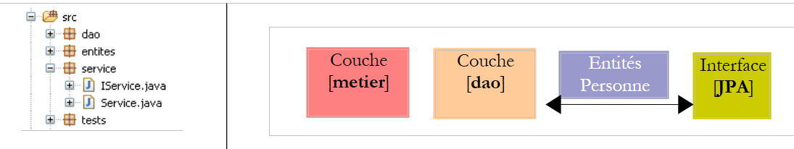 |
La couche [service] présente l'interface [IService] étudiée précédemment au paragraphe 3.1.4. L'implémentation [Service] de l'interface [IService] est identique à l'implémentation étudiée précédemment au paragraphe 3.1.4, à trois détails près :
@Stateless
@TransactionAttribute(TransactionAttributeType.REQUIRED)
public class Service implements IService {
// couche [dao]
@EJB
private IDao dao;
public IDao getDao() {
return dao;
}
public void setDao(IDao dao) {
this.dao = dao;
}
- ligne 2 : la classe [Service] est un Ejb sans état
- ligne 3 : toutes les méthodes de la classe [Service] doivent se dérouler dans une transaction
- lignes 7-8 : une référence sur l'Ejb de la couche [dao] sera injectée par le conteneur Ejb dans le champ [IDao dao] de la ligne 8. C'est l'annotation @EJB de la ligne 7 qui demande cette injection. L'objet injecté doit être un Ejb. C'est une différence importante avec Spring où tout type d'objet peut être injecté dans un autre objet.
3.2.5. Configuration des couches
 |
La configuration des couches [service], [dao] et [JPA] est assurée par les fichiers suivants :
- [META-INF/persistence.xml] configure la couche JPA
- [jboss-config.xml] configure le conteneur Ejb3. Il utilise lui-même les fichiers [default.persistence.properties, ejb3-interceptors-aop.xml, embedded-jboss-beans.xml, jndi.properties]. Ces derniers fichiers sont livrés avec Jboss Ejb3 et assure une configuration par défaut à laquelle on ne touche normalement pas. Le développeur ne s'intéresse qu'au fichier [jboss-config.xml]
Examinons les deux fichiers de configuration :
persistence.xml
<persistence xmlns="http://java.sun.com/xml/ns/persistence" xmlns:xsi="http://www.w3.org/2001/XMLSchema-instance"
xsi:schemaLocation="http://java.sun.com/xml/ns/persistence
http://java.sun.com/xml/ns/persistence/persistence_1_0.xsd" version="1.0">
<persistence-unit name="jpa">
<!-- le fournisseur JPA est Hibernate -->
<provider>org.hibernate.ejb.HibernatePersistence</provider>
<!-- la DataSource JTA gérée par l'environnement Java EE5 -->
<jta-data-source>java:/datasource</jta-data-source>
<properties>
<!-- recherche des entités de la couche JBA -->
<property name="hibernate.archive.autodetection" value="class, hbm" />
<!-- logs SQL Hibernate
<property name="hibernate.show_sql" value="true"/>
<property name="hibernate.format_sql" value="true"/>
<property name="use_sql_comments" value="true"/>
-->
<!-- le type de SGBD géré -->
<property name="hibernate.dialect" value="org.hibernate.dialect.MySQLInnoDBDialect" />
<!-- recréation de toutes les tables (drop+create) au déploiement de l'unité de persistence -->
<property name="hibernate.hbm2ddl.auto" value="create" />
</properties>
</persistence-unit>
</persistence>
Ce fichier ressemble à ceux que nous avons déjà rencontrés dans l'étude des entités JPA. Il configure une couche JPA Hibernate. Les nouveautés sont les suivantes :
- ligne 5 : l'unité de persistance jpa n'a pas l'attribut transaction-type qu'on avait toujours jusqu'ici :
<persistence-unit name="jpa" transaction-type="RESOURCE_LOCAL" />
En l'absence de valeur, l'attribut transaction-type a la valeur par défaut "JTA" (pour Java Transaction Api) qui indique que le gestionnaire de transactions est fourni par un conteneur Ejb3. Un gestionnaire "JTA" peut faire davantage qu'un gestionaire "RESOURCE_LOCAL" : il peut gérer des transactions qui couvrent plusieurs connexions. Avec JTA, on peut ouvrir une transaction t1 sur une connexion c1 sur un SGBD 1, une transaction t2 sur une connexion c2 avec un SGBD 2 et être capable de considérer (t1,t2) comme une unique transaction dans laquelle soit toutes les opérations réussissent (commit) soit aucune (rollback).
ici, nous fonctionnons avec le gestionnaire JTA du conteneur Jboss Ejb3.
- ligne 11 : déclare la source de données que doit utiliser le gestionnaire JTA. Celle-ci est donnée sous la forme d'un nom JNDI (Java Naming and Directory Interface). Cette source de données est définie dans [jboss-config.xml].
jboss-config.xml
<?xml version="1.0" encoding="UTF-8"?>
<deployment xmlns:xsi="http://www.w3.org/2001/XMLSchema-instance" xsi:schemaLocation="urn:jboss:bean-deployer bean-deployer_1_0.xsd"
xmlns="urn:jboss:bean-deployer:2.0">
<!-- factory de la DataSource -->
<bean name="datasourceFactory" class="org.jboss.resource.adapter.jdbc.local.LocalTxDataSource">
<!-- nom JNDI de la DataSource -->
<property name="jndiName">java:/datasource</property>
<!-- base de données gérée -->
<property name="driverClass">com.mysql.jdbc.Driver</property>
<property name="connectionURL">jdbc:mysql://localhost:3306/jpa</property>
<property name="userName">jpa</property>
<property name="password">jpa</property>
<!-- propriétés pool de connexions -->
<property name="minSize">0</property>
<property name="maxSize">10</property>
<property name="blockingTimeout">1000</property>
<property name="idleTimeout">100000</property>
<!-- gestionnaire de transactions, ici JTA -->
<property name="transactionManager">
<inject bean="TransactionManager" />
</property>
<!-- gestionnaire du cache Hibernate -->
<property name="cachedConnectionManager">
<inject bean="CachedConnectionManager" />
</property>
<!-- propriétés instanciation JNDI ? -->
<property name="initialContextProperties">
<inject bean="InitialContextProperties" />
</property>
</bean>
<!-- la DataSource est demandée à une factory -->
<bean name="datasource" class="java.lang.Object">
<constructor factoryMethod="getDatasource">
<factory bean="datasourceFactory" />
</constructor>
</bean>
</deployment>
- ligne 3 : la balise racine du fichier est <deployment>. Ce fichier de déploiement vise essentiellement à configurer la source de données java:/datasource qui a été déclarée dans persistence.xml.
- la source de données est définie par le bean "datasource" de la ligne 38. On voit que la source de données est obtenue (ligne 40) auprès d'une "factory" définie par le bean "datasourceFactory" de la ligne 7. Pour obtenir la source de données de l'application, le client devra appeler la méthode [getDatasource] de la factory (ligne 39).
- ligne 7 : la factory qui délivre la source de données est une classe Jboss.
- ligne 9 : le nom JNDI de la source de données. Ce doit être le même nom que celui déclaré dans la balise <jta-data-source> du fichier persistence.xml. En effet, la couche JPA va utiliser ce nom JNDI pour demander la source de données.
- lignes 12-15 : quelque chose de plus classique : les caractéristiques Jdbc de la connexion au SGBD
- lignes 18-21 : configuration du pool de connexions interne du conteneur Jboss Ejb3.
- lignes 24-26 : le gestionnaire JTA. La classe [TransactionManager] injectée ligne 25 est définie dans le fichier [embedded-jboss-beans.xml].
- lignes 28-30 : le cache Hibernate, une notion que nous n'avons pas abordée. La classe [CachedConnectionManager] injectée ligne 29 est définie dans le fichier [embedded-jboss-beans.xml]. On notera que la configuration est maintenant dépendante d'Hibernate, ce qui nous posera problème lorsqu'on voudra migrer vers Toplink.
- lignes 32-34 : configuration du service JNDI.
Nous en avons fini avec le fichier de configuration de Jboss Ejb3. Il est complexe et bien des choses restent obscures. Il a été tiré de [ref1]. Nous serons cependant capables de l'adapter à un autre SGBD ( lignes 12-15 de jboss-config.xml, ligne 24 de persistence.xml). La migration vers Toplink n'a pas été possible faute d'exemples.
3.2.6. Programme client [InitDB]
Nous abordons l'écriture d'un premier client de l'architecture décrite précédemment :
 |
Le code de [InitDB] est le suivant :
package tests;
...
public class InitDB {
// couche service
private static IService service;
// constructeur
public static void main(String[] args) throws ParseException, NamingException {
// on démarre le conteneur EJB3 JBoss
// les fichiers de configuration ejb3-interceptors-aop.xml et embedded-jboss-beans.xml sont exploités
EJB3StandaloneBootstrap.boot(null);
// Création des beans propres à l'application
EJB3StandaloneBootstrap.deployXmlResource("META-INF/jboss-config.xml");
// Deploy all EJBs found on classpath (slow, scans all)
// EJB3StandaloneBootstrap.scanClasspath();
// on déploie tous les EJB trouvés dans le classpath de l'application
EJB3StandaloneBootstrap.scanClasspath("bin".replace("/", File.separator));
// On initialise le contexte JNDI. Le fichier jndi.properties est exploité
InitialContext initialContext = new InitialContext();
// instanciation couche service
service = (IService) initialContext.lookup("Service/local");
// on vide la base
clean();
// on la remplit
fill();
// on vérifie visuellement
dumpPersonnes();
// on arrête le conteneur Ejb
EJB3StandaloneBootstrap.shutdown();
}
// affichage contenu table
private static void dumpPersonnes() {
System.out.format("[personnes]-------------------------------------------------------------------%n");
for (Personne p : service.getAll()) {
System.out.println(p);
}
}
// remplissage table
public static void fill() throws ParseException {
// création personnes
Personne p1 = new Personne("p1", "Paul", new SimpleDateFormat("dd/MM/yy").parse("31/01/2000"), true, 2);
Personne p2 = new Personne("p2", "Sylvie", new SimpleDateFormat("dd/MM/yy").parse("05/07/2001"), false, 0);
// qu'on sauvegarde
service.saveArray(new Personne[] { p1, p2 });
}
// supression éléments de la table
public static void clean() {
for (Personne p : service.getAll()) {
service.deleteOne(p.getId());
}
}
}
- la façon de lancer le conteneur Jboss Ejb3 a été trouvée dans [ref1].
- ligne 13 : le conteneur est lancé. [EJB3StandaloneBootstrap] est une classe du conteneur.
- ligne 16 : l'unité de déploiement configurée par [jboss-config.xml] est déployée dans le conteneur : gestionnaire JTA, source de données, pool de connexions, cache Hibernate, service JNDI sont mis en place.
- ligne 22 : on demande au conteneur de scanner le dossier bin du projet Eclipse pour y trouver les Ejb. Les Ejb des couches [service] et [dao] vont être trouvées et gérées par le conteneur.
- ligne 25 : un contexte JNDI est initialisé. Il va nous servir à localiser les Ejb.
- ligne 28 : l'Ejb correspondant à la classe [Service] de la couche [service] est demandé au service JNDI. Un Ejb peut être accédé localement (local) ou via le réseau (remote). Ici le nom "Service/local" de l'Ejb cherché désigne la classe [Service] de la couche [service] pour un accès local.
- maintenant, l'application est déployée et on détient une référence sur la couche [service]. On est dans la même situation qu'après la ligne 11 ci-dessous du code [InitDB] de la version Spring. On retrouve alors le même code dans les deux versions.
public class InitDB {
// couche service
private static IService service;
// constructeur
public static void main(String[] args) throws ParseException {
// configuration de l'application
ApplicationContext ctx = new ClassPathXmlApplicationContext("spring-config.xml");
// couche service
service = (IService) ctx.getBean("service");
// on vide la base
clean();
// on la remplit
fill();
// on vérifie visuellement
dumpPersonnes();
}
...
- ligne 36 (Jboss Ejb3) : on arrête le conteneur Ejb3.
L'exécution de [InitDB] donne les résultats suivants :
Le lecteur est invité à lire ces logs. On y trouve des informations intéressantes sur ce que fait le conteneur Ejb3.
3.2.7. Tests unitaires [TestNG]
Le code du programme [TestNG] est le suivant :
package tests;
...
public class TestNG {
// couche service
private IService service = null;
@BeforeClass
public void init() throws NamingException, ParseException {
// log
log("init");
// on démarre le conteneur EJB3 JBoss
// les fichiers de configuration ejb3-interceptors-aop.xml et embedded-jboss-beans.xml sont exploités
EJB3StandaloneBootstrap.boot(null);
// Création des beans propres à l'application
EJB3StandaloneBootstrap.deployXmlResource("META-INF/jboss-config.xml");
// Deploy all EJBs found on classpath (slow, scans all)
// EJB3StandaloneBootstrap.scanClasspath();
// on déploie tous les EJB trouvés dans le classpath de l'application
EJB3StandaloneBootstrap.scanClasspath("bin".replace("/", File.separator));
// On initialise le contexte JNDI. Le fichier jndi.properties est exploité
InitialContext initialContext = new InitialContext();
// instanciation couche service
service = (IService) initialContext.lookup("Service/local");
// on vide la base
clean();
// on la remplit
fill();
// on vérifie visuellement
dumpPersonnes();
}
@AfterClass
public void terminate() {
// log
log("terminate");
// Shutdown EJB container
EJB3StandaloneBootstrap.shutdown();
}
@BeforeMethod
public void setUp() throws ParseException {
...
}
...
}
- la méthode init (lignes 10-37) qui sert à mettre en place l'environnement nécessaire aux tests reprend le code expliqué précédemment dans [InitDB].
- la méthode terminate (lignes 40-45) qui est exécutée à la fin des tests (présence de l'annotation @AfterClass) arrête le conteneur Ejb3 (ligne 44).
- tout le reste est identique à ce qu'il était dans la version Spring.
Les tests réussissent :

3.2.8. Changer de SGBD
 |
Pour changer de SGBD, il suffit de remplacer le contenu du dossier [META-INF] [2] par celui du dossier du SGBD dans le dossier [conf] [1]. Prenons l'exemple de SQL Server :
Le fichier [persistence.xml] est le suivant :
<persistence xmlns="http://java.sun.com/xml/ns/persistence" xmlns:xsi="http://www.w3.org/2001/XMLSchema-instance"
xsi:schemaLocation="http://java.sun.com/xml/ns/persistence
http://java.sun.com/xml/ns/persistence/persistence_1_0.xsd" version="1.0">
<persistence-unit name="jpa">
<!-- le fournisseur JPA est Hibernate -->
<provider>org.hibernate.ejb.HibernatePersistence</provider>
<!-- la DataSource JTA gérée par l'environnement Java EE5 -->
<jta-data-source>java:/datasource</jta-data-source>
<properties>
<!-- recherche des entités de la couche JBA -->
<property name="hibernate.archive.autodetection" value="class, hbm" />
<!-- logs SQL Hibernate
<property name="hibernate.show_sql" value="true"/>
<property name="hibernate.format_sql" value="true"/>
<property name="use_sql_comments" value="true"/>
-->
<!-- le type de SGBD géré -->
<property name="hibernate.dialect" value="org.hibernate.dialect.SQLServerDialect" />
<!-- recréation de toutes les tables (drop+create) au déploiement de l'unité de persistence -->
<property name="hibernate.hbm2ddl.auto" value="create" />
</properties>
</persistence-unit>
</persistence>
Seule une ligne a changé :
- ligne 24 : le dialecte SQL qu'Hibernate doit utiliser
Le fichier [jboss-config.xml] de SQL Server est lui, le suivant :
<?xml version="1.0" encoding="UTF-8"?>
<deployment xmlns:xsi="http://www.w3.org/2001/XMLSchema-instance" xsi:schemaLocation="urn:jboss:bean-deployer bean-deployer_1_0.xsd"
xmlns="urn:jboss:bean-deployer:2.0">
<!-- factory de la DataSource -->
<bean name="datasourceFactory" class="org.jboss.resource.adapter.jdbc.local.LocalTxDataSource">
<!-- nom JNDI de la DataSource -->
<property name="jndiName">java:/datasource</property>
<!-- base de données gérée -->
<property name="driverClass">com.microsoft.sqlserver.jdbc.SQLServerDriver</property>
<property name="connectionURL">jdbc:sqlserver://localhost\\SQLEXPRESS:1246;databaseName=jpa</property>
<property name="userName">jpa</property>
<property name="password">jpa</property>
<!-- propriétés pool de connexions -->
...
</bean>
</deployment>
Seules les lignes 12-15 ont été changées : elles donnent les caractéristiques de la nouvelle connexion Jdbc.
Le lecteur est invité à répéter avec d'autres SGBD les tests décrits pour MySQL5.
3.2.9. Changer d'implémentation JPA
Comme il a été indiqué plus haut, nous n'avons pas trouvé d'exemple d'utilisation du conteneur Jboss Ejb3 avec Toplink. A ce jour (juin 2007), je ne sais toujours pas si cette configuration est possible.
3.3. Autres exemples
Résumons ce qui a été fait avec l'entité Personne. Nous avons construit trois architectures pour conduire les mêmes tests :
1 - une implémentation Spring / Hibernate
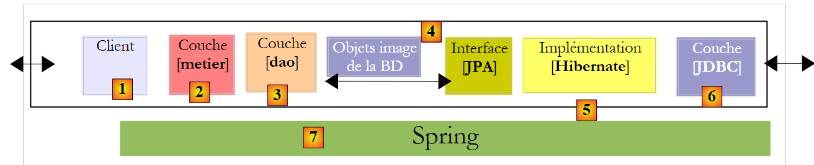 |
2 - une implémentation Spring / Toplink
 |
3 - une implémentation Jboss Ejb3 / Hibernate
 |
Les exemples du tutoriel reprennent ces trois architectures avec d'autres entités étudiées dans la première partie du tutoriel :
Categorie - Article
 |
- en [1] : la version Spring / Hibernate
- en [2] : la version Spring / Toplink
- en [3] : la version Jboss Ejb3 / Hibernate
Personne- Adresse - Activite
 |
- en [1] : la version Spring / Hibernate
- en [2] : la version Spring / Toplink
- en [3] : la version Jboss Ejb3 / Hibernate
Ces exemples n'amènent pas de nouveautés quant à l'architecture. Ils se placent simplement dans un contexte où il y a plusieurs entités à gérer avec des relations un-à-plusieurs ou plusieurs-à-plusieurs entre elles, ce que n'avaient pas les exemples avec l'entité Personne.
3.4. Exemple 3 : Spring / JPA dans une application web
3.4.1. Présentation
Nous reprenons ici une application présentée dans le document suivant :
[ref4] : Les bases du développement web MVC en Java [http://tahe.developpez.com/java/baseswebmvc/].
Ce document présente les bases du développement web MVC en Java. Pour comprendre l'exemple qui suit, le lecteur doit avoir ces bases. L'application web utilisera le serveur Tomcat. L'installation de celui-ci et son utilisation au sein d'Eclipse sont présentées au paragraphe 5.3.
L'application avait été développée avec une couche [dao] s'appuyant sur l'outil Ibatis / SqlMap [http://ibatis.apache.org/] qui assurait le pont relationnel / objet. Nous nous contentons de remplacer Ibatis par JPA. L'architecture de l'application sera la suivante :
 |
L’application web que nous allons écrire va permettre de gérer un groupe de personnes avec quatre opérations :
- liste des personnes du groupe
- ajout d’une personne au groupe
- modification d’une personne du groupe
- suppression d’une personne du groupe
On reconnaîtra les quatre opérations de base sur une table de base de données. Les copies d’écran qui suivent montrent les pages que l’application échange avec l’utilisateur.
 |
 |
 |
 |
 |
3.4.2. Le projet Eclipse
Le projet Eclipse de l’application est le suivant :
 |
- en [1] : le projet web. C'est un projet Eclipse de type [Dynamic Web Project] [2]. On le trouvera en [4] dans le dossier [3] des exemples du tutoriel. On l'importera.
 |
- en [5] : les sources et la configuration des couches [service, dao, jpa]. Nous conservons l'acquis [dao, entites, service] du projet Eclipse [hibernate-spring-personnes-metier-dao] étudié au paragraphe 3.1.1. Nous ne développons que la couche [web] représentée ici par le paquetage [web]. Par ailleurs nous conservons les fichiers de configuration [persistence.xml, spring-config.xml] de ce projet au détail près que nous allons utiliser le SGBD Postgres, ce qui se traduit par les modifications suivantes dans [spring-config.xml] :
<?xml version="1.0" encoding="UTF-8"?>
<beans xmlns="http://www.springframework.org/schema/beans"
...
<bean id="entityManagerFactory" class="org.springframework.orm.jpa.LocalContainerEntityManagerFactoryBean">
<property name="dataSource" ref="dataSource" />
<property name="jpaVendorAdapter">
...
<property name="databasePlatform" value="org.hibernate.dialect.PostgreSQLDialect" />
...
</property>
...
</bean>
<!-- la source de donnéees DBCP -->
<bean id="dataSource" class="org.apache.commons.dbcp.BasicDataSource" destroy-method="close">
<property name="driverClassName" value="org.postgresql.Driver" />
<property name="url" value="jdbc:postgresql:jpa" />
<property name="username" value="jpa" />
<property name="password" value="jpa" />
</bean>
....
</beans>
Les lignes 8 et 16-19 ont été adaptées à Postgres.
- en [6] : le dossier [WebContent] contient les pages JSP du projet ainsi que les bibliothèques nécessaires. Ces dernières sont présentées en [8]
- l'application est utilisable avec divers SGBD. Il suffit de changer le fichier [spring-config.xml]. Le dossier [conf] [7] contient le fichier [spring-config.xml] adapté à divers SGBD.
3.4.3. La couche [web]
Notre application a l'architecture multi-couches suivante :
 |
La couche [web] va offrir des écrans à l’utilisateur pour lui permettre de gérer le groupe de personnes :
- liste des personnes du groupe
- ajout d’une personne au groupe
- modification d’une personne du groupe
- suppression d’une personne du groupe
Pour cela, elle va s’appuyer sur la couche [service] qui elle même fera appel à la couche [dao]. Nous avons déjà présenté les écrans gérés par la couche [web] (paragraphe 3.4.1). Pour décrire la couche web, nous allons présenter successivement :
- sa configuration
- ses vues
- son contrôleur
- quelques tests
3.4.3.1. Configuration de l’application web
Revenons sur l'architecture du projet Eclipse :
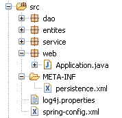 |  |
- dans le paquetage [web], on trouve le contrôleur de l'application web : la classe [Application].
- les pages JSP / JSTL de l'application sont dans [WEB-INF/vues].
- le dossier [WEB-INF/lib] contient les archives tierces nécessaires à l’application. Elles sont visibles dans le dossier [Web App Libraries].
[web.xml]
Le fichier [web.xml] est le fichier exploité par le serveur web pour charger l’application. Son contenu est le suivant :
<?xml version="1.0" encoding="UTF-8"?>
<web-app id="WebApp_ID" version="2.4" xmlns="http://java.sun.com/xml/ns/j2ee" xmlns:xsi="http://www.w3.org/2001/XMLSchema-instance"
xsi:schemaLocation="http://java.sun.com/xml/ns/j2ee http://java.sun.com/xml/ns/j2ee/web-app_2_4.xsd">
<display-name>spring-jpa-hibernate-personnes-crud</display-name>
<!-- ServletPersonne -->
<servlet>
<servlet-name>personnes</servlet-name>
<servlet-class>web.Application</servlet-class>
<init-param>
<param-name>urlEdit</param-name>
<param-value>/WEB-INF/vues/edit.jsp</param-value>
</init-param>
<init-param>
<param-name>urlErreurs</param-name>
<param-value>/WEB-INF/vues/erreurs.jsp</param-value>
</init-param>
<init-param>
<param-name>urlList</param-name>
<param-value>/WEB-INF/vues/list.jsp</param-value>
</init-param>
</servlet>
<!-- Mapping ServletPersonne-->
<servlet-mapping>
<servlet-name>personnes</servlet-name>
<url-pattern>/do/*</url-pattern>
</servlet-mapping>
<!-- fichiers d'accueil -->
<welcome-file-list>
<welcome-file>index.jsp</welcome-file>
</welcome-file-list>
<!-- Page d'erreur inattendue -->
<error-page>
<exception-type>java.lang.Exception</exception-type>
<location>/WEB-INF/vues/exception.jsp</location>
</error-page>
</web-app>
- lignes 23-26 : les url [/do/*] seront traitées par la servlet [personnes]
- lignes 7-8 : la servlet [personnes] est une instance de la classe [Application], une classe que nous allons construire.
- lignes 9-20 : définissent trois paramètres [urlList, urlEdit, urlErreurs] identifiant les Url des pages JSP des vues [list, edit, erreurs].
- lignes 28-30 : l’application a une page d’entrée par défaut [index.jsp] qui se trouve à la racine du dossier de l’application web.
- lignes 32-35 : l’application a une page d’erreurs par défaut qui est affichée lorsque le serveur web récupère une exception non gérée par l'application.
- ligne 37 : la balise <exception-type> indique le type d'exception gérée par la directive <error-page>, ici le type [java.lang.Exception] et dérivé, donc toutes les exceptions.
- ligne 38 : la balise <location> indique la page JSP à afficher lorsqu'une exception du type défini par <exception-type> se produit. L'exception e survenue est disponible à cette page dans un objet nommé exception si la page a la directive :
<%@ page isErrorPage="true" %>
- (suite)
- si <exception-type> précise un type T1 et qu'une exception de type T2 non dérivé de T1 remonte jusqu'au serveur web, celui-ci envoie au client une page d'exception propriétaire généralement peu conviviale. D'où l'intérêt de la balise <error-page> dans le fichier [web.xml].
[index.jsp]
Cette page est présentée si un utilisateur demande directement le contexte de l’application sans préciser d’url, c.a.d. ici [/spring-jpa-hibernate-personnes-crud]. Son contenu est le suivant :
<%@ page language="java" pageEncoding="ISO-8859-1" contentType="text/html;charset=ISO-8859-1"%>
<%@ taglib uri="/WEB-INF/c.tld" prefix="c" %>
<c:redirect url="/do/list"/>
[index.jsp] redirige (ligne 4) le client vers l’url [/do/list]. Cette url affiche la liste des personnes du groupe.
3.4.3.2. Les pages JSP / JSTL de l’application
Elle sert à afficher la liste des personnes :

Son code est le suivant :
<%@ page language="java" pageEncoding="ISO-8859-1" contentType="text/html;charset=ISO-8859-1"%>
<%@ taglib uri="/WEB-INF/c.tld" prefix="c" %>
<%@ taglib uri="/WEB-INF/taglibs-datetime.tld" prefix="dt" %>
<html>
<head>
<title>MVC - Personnes</title>
</head>
<body background="<c:url value="/ressources/standard.jpg"/>">
<c:if test="${erreurs!=null}">
<h3>Les erreurs suivantes se sont produites :</h3>
<ul>
<c:forEach items="${erreurs}" var="erreur">
<li><c:out value="${erreur}"/></li>
</c:forEach>
</ul>
<hr>
</c:if>
<h2>Liste des personnes</h2>
<table border="1">
<tr>
<th>Id</th>
<th>Version</th>
<th>Prénom</th>
<th>Nom</th>
<th>Date de naissance</th>
<th>Marié</th>
<th>Nombre d'enfants</th>
<th></th>
</tr>
<c:forEach var="personne" items="${personnes}">
<tr>
<td><c:out value="${personne.id}"/></td>
<td><c:out value="${personne.version}"/></td>
<td><c:out value="${personne.prenom}"/></td>
<td><c:out value="${personne.nom}"/></td>
<td><dt:format pattern="dd/MM/yyyy">${personne.datenaissance.time}</dt:format></td>
<td><c:out value="${personne.marie}"/></td>
<td><c:out value="${personne.nbenfants}"/></td>
<td><a href="<c:url value="/do/edit?id=${personne.id}"/>">Modifier</a></td>
<td><a href="<c:url value="/do/delete?id=${personne.id}"/>">Supprimer</a></td>
</tr>
</c:forEach>
</table>
<br>
<a href="<c:url value="/do/edit?id=-1"/>">Ajout</a>
</body>
</html>
-
cette vue reçoit deux éléments dans son modèle :
- l'élément [personnes] associé à un objet de type [List] d’objets de type [Personne] : une liste de personnes.
- l'élément facultatif [erreurs] associé à un objet de type [List] d’objets de type [String] : une liste de messages d'erreur.
-
lignes 31-43 : on parcourt la liste ${personnes} pour afficher un tableau HTML contenant les personnes du groupe.
- ligne 40 : l’url pointée par le lien [Modifier] est paramétrée par le champ [id] de la personne courante afin que le contrôleur associé à l’url [/do/edit] sache quelle est la personne à modifier.
- ligne 41 : il est fait de même pour le lien [Supprimer].
- ligne 37 : pour afficher la date de naissance de la personne sous la forme JJ/MM/AAAA, on utilise la balise <dt> de la bibliothèque de balise [DateTime] du projet Apache [Jakarta Taglibs] :

Le fichier de description de cette bibliothèque de balises est défini ligne 3.
- ligne 46 : le lien [Ajout] d'ajout d'une nouvelle personne a pour cible l'url [/do/edit] comme le lien [Modifier] de la ligne 40. C'est la valeur -1 du paramètre [id] qui indique qu'on a affaire à un ajout plutôt qu'une modification.
- lignes 10-18 : si l'élément ${erreurs} est dans le modèle, alors on affiche les messages d'erreurs qu'il contient.
Elle sert à afficher le formulaire d’ajout d’une nouvelle personne ou de modification d’une personne existante :
 |
Le code de la vue [edit.jsp] est le suivant :
<%@ page language="java" pageEncoding="ISO-8859-1" contentType="text/html;charset=ISO-8859-1"%>
<%@ taglib uri="/WEB-INF/c.tld" prefix="c" %>
<%@ taglib uri="/WEB-INF/taglibs-datetime.tld" prefix="dt" %>
<html>
<head>
<title>MVC - Personnes</title>
</head>
<body background="../ressources/standard.jpg">
<h2>Ajout/Modification d'une personne</h2>
<c:if test="${erreurEdit!=''}">
<h3>Echec de la mise à jour :</h3>
L'erreur suivante s'est produite : ${erreurEdit}
<hr>
</c:if>
<form method="post" action="<c:url value="/do/validate"/>">
<table border="1">
<tr>
<td>Id</td>
<td>${id}</td>
</tr>
<tr>
<td>Version</td>
<td>${version}</td>
</tr>
<tr>
<td>Prénom</td>
<td>
<input type="text" value="${prenom}" name="prenom" size="20">
</td>
<td>${erreurPrenom}</td>
</tr>
<tr>
<td>Nom</td>
<td>
<input type="text" value="${nom}" name="nom" size="20">
</td>
<td>${erreurNom}</td>
</tr>
<tr>
<td>Date de naissance (JJ/MM/AAAA)</td>
<td>
<input type="text" value="${datenaissance}" name="datenaissance">
</td>
<td>${erreurDateNaissance}</td>
</tr>
<tr>
<td>Marié</td>
<td>
<c:choose>
<c:when test="${marie}">
<input type="radio" name="marie" value="true" checked>Oui
<input type="radio" name="marie" value="false">Non
</c:when>
<c:otherwise>
<input type="radio" name="marie" value="true">Oui
<input type="radio" name="marie" value="false" checked>Non
</c:otherwise>
</c:choose>
</td>
</tr>
<tr>
<td>Nombre d'enfants</td>
<td>
<input type="text" value="${nbenfants}" name="nbenfants">
</td>
<td>${erreurNbEnfants}</td>
</tr>
</table>
<br>
<input type="hidden" value="${id}" name="id">
<input type="hidden" value="${version}" name="version">
<input type="submit" value="Valider">
<a href="<c:url value="/do/list"/>">Annuler</a>
</form>
</body>
</html>
Cette vue présente un formulaire d'ajout d'une nouvelle personne ou de mise à jour d'une personne existante. Par la suite et pour simplifier l'écriture, nous utiliserons l'unique terme de [mise à jour]. Le bouton [Valider] (ligne 73) provoque le POST du formulaire à l'url [/do/validate] (ligne 16). Si le POST échoue, la vue [edit.jsp] est réaffichée avec la ou les erreurs qui se sont produites, sinon la vue [list.jsp] est affichée.
- la vue [edit.jsp] affichée aussi bien sur un GET que sur un POST qui échoue, reçoit les éléments suivants dans son modèle :
attribut | GET | POST |
identifiant de la personne mise à jour | idem | |
sa version | idem | |
son prénom | prénom saisi | |
son nom | nom saisi | |
sa date de naissance | date de naissance saisie | |
son état marital | état marital saisi | |
son nombre d'enfants | nombre d'enfants saisi | |
vide | un message d'erreur signalant un échec de l'ajout ou de la modification au moment du POST provoqué par le bouton [Envoyer]. Vide si pas d'erreur. | |
vide | signale un prénom erroné – vide sinon | |
vide | signale un nom erroné – vide sinon | |
vide | signale une date de naissance erronée – vide sinon | |
vide | signale un nombre d'enfants erroné – vide sinon |
- lignes 11-15 : si le POST du formulaire se passe mal, on aura [erreurEdit!=''] et un message d'erreur sera affiché.
- ligne 16 : le formulaire sera posté à l’url [/do/validate]
- ligne 20 : l'élément [id] du modèle est affiché
- ligne 24 : l'élément [version] du modèle est affiché
- lignes 26-32 : saisie du prénom de la personne :
- lors de l’affichage initial du formulaire (GET), ${prenom} affiche la valeur actuelle du champ [prenom] de l’objet [Personne] mis à jour et ${erreurPrenom} est vide.
- en cas d’erreur après le POST, on réaffiche la valeur saisie ${prenom} ainsi que le message d’erreur éventuel ${erreurPrenom}
- lignes 33-39 : saisie du nom de la personne
- lignes 40-46 : saisie de la date de naissance de la personne
- lignes 47-61 : saisie de l’état marié ou non de la personne avec un bouton radio. On utilise la valeur du champ [marie] de l’objet [Personne] pour savoir lequel des deux boutons radio doit être coché.
- lignes 62-68 : saisie du nombre d’enfants de la personne
- ligne 71 : un champ HTML caché nommé [id] et ayant pour valeur le champ [id] de la personne en cours de mise à jour, -1 pour un ajout, autre chose pour une modification.
- ligne 72 : un champ HTML caché nommé [version] et ayant pour valeur le champ [id] de la personne en cours de mise à jour.
- ligne 73 : le bouton [Valider] de type [Submit] du formulaire
- ligne 74 : un lien permettant de revenir à la liste des personnes. Il a été libellé [Annuler] parce qu’il permet de quitter le formulaire sans le valider.
Elle sert à afficher une page signalant qu’il s’est produit une exception non gérée par l’application et qui est remontée jusqu’àu serveur web.
Par exemple, supprimons une personne qui n’existe pas dans le groupe :
 |
Le code de la vue [exception.jsp] est le suivant :
<%@ page language="java" pageEncoding="ISO-8859-1" contentType="text/html;charset=ISO-8859-1"%>
<%@ taglib uri="/WEB-INF/c.tld" prefix="c" %>
<%@ page isErrorPage="true" %>
<%
response.setStatus(200);
%>
<html>
<head>
<title>MVC - Personnes</title>
</head>
<body background="<c:url value="/ressources/standard.jpg"/>">
<h2>MVC - personnes</h2>
L'exception suivante s'est produite :
<%= exception.getMessage()%>
<br><br>
<a href="<c:url value="/do/list"/>">Retour à la liste</a>
</body>
</html>
-
cette vue reçoit une clé dans son modèle l'élément [exception] qui est l’exception qui a été interceptée par le serveur web. Pour que cet élément soit inclus dans le modèle de la page JSP par le serveur web, il faut que la page ait défini la balise de la ligne 3.
-
ligne 6 : on fixe à 200 le code d'état HTTP de la réponse. C'est le premier entête HTTP de la réponse. Le code 200 signifie au client que sa demande a été honorée. Généralement un document HTML a été intégré dans la réponse du serveur. C'est le cas ici. Si on ne fixe pas à 200 le code d'état HTTP de la réponse, il aura ici la valeur 500 qui signifie qu'il s'est produit une erreur. En effet, le serveur web ayant intercepté une exception non gérée trouve cette situation anormale et le signale par le code 500. La réaction au code HTTP 500 diffère selon les navigateurs : Firefox affiche le document HTML qui peut accompagner cette réponse alors qu'IE ignore ce document et affiche sa propre page. C'est pour cette raison que nous avons remplacé le code 500 par le code 200.
- ligne 16 : le texte de l’exception est affiché
- ligne 18 : on propose à l’utilisateur un lien pour revenir à la liste des personnes
Elle sert à afficher une page signalant les erreurs d'initialisation de l'application, c.a.d. les erreurs détectées lors de l'exécution de la méthode [init] de la servlet du contrôleur. Ce peut être par exemple l'absence d'un paramètre dans le fichier [web.xml] comme le montre l'exemple ci-dessous :

Le code de la page [erreurs.jsp] est le suivant :
<%@ page language="java" contentType="text/html; charset=ISO-8859-1"
pageEncoding="ISO-8859-1"%>
<!DOCTYPE HTML PUBLIC "-//W3C//DTD HTML 4.01 Transitional//EN">
<%@ taglib uri="/WEB-INF/c.tld" prefix="c" %>
<html>
<head>
<title>MVC - Personnes</title>
</head>
<body>
<h2>Les erreurs suivantes se sont produites</h2>
<ul>
<c:forEach var="erreur" items="${erreurs}">
<li>${erreur}</li>
</c:forEach>
</ul>
</body>
</html>
La page reçoit dans son modèle un élément [erreurs] qui est un objet de type [ArrayList] d'objets [String], ces derniers étant des messages d'erreurs. Ils sont affichés par la boucle des lignes 13-15.
3.4.3.3. Le contrôleur de l’application
Le contrôleur [Application] est défini dans le paquetage [web] :

Structure et initialisation du contrôleur
Le squelette du contrôleur [Application] est le suivant :
package web;
...
@SuppressWarnings("serial")
public class Application extends HttpServlet {
// paramètres d'instance
private String urlErreurs = null;
private ArrayList erreursInitialisation = new ArrayList<String>();
private String[] paramètres = { "urlList", "urlEdit", "urlErreurs" };
private Map params = new HashMap<String, String>();
// service
private IService service = null;
// init
@SuppressWarnings("unchecked")
public void init() throws ServletException {
// on récupère les paramètres d'initialisation de la servlet
ServletConfig config = getServletConfig();
// on traite les autres paramètres d'initialisation
String valeur = null;
for (int i = 0; i < paramètres.length; i++) {
// valeur du paramètre
valeur = config.getInitParameter(paramètres[i]);
// paramètre présent ?
if (valeur == null) {
// on note l'erreur
erreursInitialisation.add("Le paramètre [" + paramètres[i] + "] n'a pas été initialisé");
} else {
// on mémorise la valeur du paramètre
params.put(paramètres[i], valeur);
}
}
// l'url de la vue [erreurs] a un traitement particulier
urlErreurs = config.getInitParameter("urlErreurs");
if (urlErreurs == null)
throw new ServletException("Le paramètre [urlErreurs] n'a pas été initialisé");
// configuration de l'application
ApplicationContext ctx = new ClassPathXmlApplicationContext("spring-config.xml");
// couche service
service = (IService) ctx.getBean("service");
// on vide la base
clean();
// on la remplit
try {
fill();
} catch (ParseException e) {
throw new ServletException(e);
}
}
// remplissage table
public void fill() throws ParseException {
// création personnes
Personne p1 = new Personne("p1", "Paul", new SimpleDateFormat("dd/MM/yy").parse("31/01/2000"), true, 2);
Personne p2 = new Personne("p2", "Sylvie", new SimpleDateFormat("dd/MM/yy").parse("05/07/2001"), false, 0);
// qu'on sauvegarde
service.saveArray(new Personne[] { p1, p2 });
}
// supression éléments de la table
public void clean() {
for (Personne p : service.getAll()) {
service.deleteOne(p.getId());
}
}
// GET
@SuppressWarnings("unchecked")
public void doGet(HttpServletRequest request, HttpServletResponse response) throws IOException, ServletException {
...
}
// affichage liste des personnes
private void doListPersonnes(HttpServletRequest request, HttpServletResponse response) throws ServletException, IOException {
...
}
// modification / ajout d'une personne
private void doEditPersonne(HttpServletRequest request, HttpServletResponse response) throws ServletException, IOException {
...
}
// suppression d'une personne
private void doDeletePersonne(HttpServletRequest request, HttpServletResponse response) throws ServletException, IOException {
...
}
// validation modification / ajout d'une personne
public void doValidatePersonne(HttpServletRequest request, HttpServletResponse response) throws ServletException, IOException {
...
}
// affichage formulaire pré-rempli
private void showFormulaire(HttpServletRequest request, HttpServletResponse response, String erreurEdit) throws ServletException, IOException {
...
}
// post
public void doPost(HttpServletRequest request, HttpServletResponse response) throws IOException, ServletException {
// on passe la main au GET
doGet(request, response);
}
}
- lignes 21-34 : on récupère les paramètres attendus dans le fichier [web.xml].
- lignes 37-39 : le paramètre [urlErreurs] doit être obligatoirement présent car il désigne l'url de la vue [erreurs] capable d'afficher les éventuelles erreurs d'initialisation. S'il n'existe pas, on interrompt l'application en lançant une [ServletException] (ligne 39). Cette exception va remonter au serveur web et être gérée par la balise <error-page> du fichier [web.xml]. La vue [exception.jsp] est donc affichée :

Le lien [Retour à la liste] ci-dessus est inopérant. L'utiliser redonne la même réponse tant que l'application n'a pas été modifiée et rechargée. Il est utile pour d'autres types d'exceptions comme nous l'avons déjà vu.
- lignes 40-43 : exploitent le fichier de configuration Spring pour récupérer une référence sur la couche [service]. Après l'initialisation du contrôleur, les méthodes de celui-ci disposent d'une référence [service] sur la couche [service] (ligne 15) qu'elles vont utiliser pour exécuter les actions demandées par l'utilisateur. Celles-ci vont être interceptées par la méthode [doGet] qui va les faire traiter par une méthode particulière du contrôleur :
Url | Méthode HTTP | méthode contrôleur |
GET | doListPersonnes | |
GET | doEditPersonne | |
POST | doValidatePersonne | |
GET | doDeletePersonne |
La méthode [doGet]
Cette méthode a pour but d'orienter le traitement des actions demandées par l'utilisateur vers la bonne méthode. Son code est le suivant :
// GET
@SuppressWarnings("unchecked")
public void doGet(HttpServletRequest request, HttpServletResponse response) throws IOException, ServletException {
// on vérifie comment s'est passée l'initialisation de la servlet
if (erreursInitialisation.size() != 0) {
// on passe la main à la page d'erreurs
request.setAttribute("erreurs", erreursInitialisation);
getServletContext().getRequestDispatcher(urlErreurs).forward(request, response);
// fin
return;
}
// on récupère la méthode d'envoi de la requête
String méthode = request.getMethod().toLowerCase();
// on récupère l'action à exécuter
String action = request.getPathInfo();
// action ?
if (action == null) {
action = "/list";
}
// exécution action
if (méthode.equals("get") && action.equals("/list")) {
// liste des personnes
doListPersonnes(request, response);
return;
}
if (méthode.equals("get") && action.equals("/delete")) {
// suppression d'une personne
doDeletePersonne(request, response);
return;
}
if (méthode.equals("get") && action.equals("/edit")) {
// présentation formulaire ajout / modification d'une personne
doEditPersonne(request, response);
return;
}
if (méthode.equals("post") && action.equals("/validate")) {
// validation formulaire ajout / modification d'une personne
doValidatePersonne(request, response);
return;
}
// autres cas
doListPersonnes(request, response);
}
- lignes 7-13 : on vérifie que la liste des erreurs d'initialisation est vide. Si ce n'est pas le cas, on fait afficher la vue [erreurs(erreurs)] qui va signaler la ou les erreurs.
- ligne 15 : on récupère la méthode [get] ou [post] que le client a utilisée pour faire sa requête.
- ligne 17 : on récupère la valeur du paramètre [action] de la requête.
- lignes 23-27 : traitement de la requête [GET /do/list] qui demande la liste des personnes.
- lignes 28-32 : traitement de la requête [GET /do/delete] qui demande la suppression d'une personne.
- lignes 33-37 : traitement de la requête [GET /do/edit] qui demande le formulaire de mise à jour d'une personne.
- lignes 38-42 : traitement de la requête [POST /do/validate] qui demande la validation de la personne mise à jour.
- ligne 44 : si l'action demandée n'est pas l'une des cinq précédentes, alors on fait comme si c'était [GET /do/list].
La méthode [doListPersonnes]
Cette méthode traite la requête [GET /do/list] qui demande la liste des personnes :
Son code est le suivant :
// affichage liste des personnes
private void doListPersonnes(HttpServletRequest request, HttpServletResponse response) throws ServletException, IOException {
// le modèle de la vue [list]
request.setAttribute("personnes", service.getAll());
// affichage de la vue [list]
getServletContext().getRequestDispatcher((String) params.get("urlList")).forward(request, response);
}
- ligne 4 : on demande à la couche [service] la liste des personnes du groupe et on met celle-ci dans le modèle sous la clé " personnes ".
- ligne 6 : on fait afficher la vue [list.jsp] décrite paragraphe 3.4.3.2.
La méthode [doDeletePersonne]
Cette méthode traite la requête [GET /do/delete?id=XX] qui demande la suppression de la personne d'id=XX. L'url [/do/delete?id=XX] est celle des liens [Supprimer] de la vue [list.jsp] :

dont le code est le suivant :
...
<html>
<head>
<title>MVC - Personnes</title>
</head>
<body background="<c:url value="/ressources/standard.jpg"/>">
...
<c:forEach var="personne" items="${personnes}">
<tr>
...
<td><a href="<c:url value="/do/edit?id=${personne.id}"/>">Modifier</a></td>
<td><a href="<c:url value="/do/delete?id=${personne.id}"/>">Supprimer</a></td>
</tr>
</c:forEach>
</table>
<br>
<a href="<c:url value="/do/edit?id=-1"/>">Ajout</a>
</body>
</html>
Ligne 12, on voit l’url [/do/delete?id=XX] du lien [Supprimer]. La méthode [doDeletePersonne] qui doit traiter cette url doit supprimer la personne d’id=XX puis faire afficher la nouvelle liste des personnes du groupe. Son code est le suivant :
// suppression d'une personne
private void doDeletePersonne(HttpServletRequest request, HttpServletResponse response) throws ServletException, IOException {
// on récupère l'id de la personne
int id = Integer.parseInt(request.getParameter("id"));
// on supprime la personne
service.deleteOne(id);
// on redirige vers la liste des personnes
response.sendRedirect("list");
}
- ligne 4 : l’url traitée est de la forme [/do/delete?id=XX]. On récupère la valeur [XX] du paramètre [id].
- ligne 6 : on demande à la couche [service] la suppression de la personne ayant l’id obtenu. Nous ne faisons aucune vérification. Si la personne qu’on cherche à supprimer n’existe pas, la couche [dao] lance une exception que laisse remonter la couche [service]. Nous ne la gérons pas non plus ici, dans le contrôleur. Elle remontera donc jusqu’au serveur web qui par configuration fera afficher la page [exception.jsp], décrite page 177 :

- ligne 9 : si la suppression a eu lieu (pas d’exception), on demande au client de se rediriger vers l'Url relative [list]. Comme celle qui vient d'être traitée est [/do/delete], l'Url de redirection sera [/do/list]. Le navigateur sera donc amené à faire un [GET /do/list] qui provoquera l'affichage de la liste des personnes.
La méthode [doEditPersonne]
Cette méthode traite la requête [GET /do/edit?id=XX] qui demande le formulaire de mise à jour de la personne d'id=XX. L'url [/do/edit?id=XX] est celle des liens [Modifier] et celui du lien [Ajout] de la vue [list.jsp] :

dont le code est le suivant :
...
<html>
<head>
<title>MVC - Personnes</title>
</head>
<body background="<c:url value="/ressources/standard.jpg"/>">
...
<c:forEach var="personne" items="${personnes}">
<tr>
...
<td><a href="<c:url value="/do/edit?id=${personne.id}"/>">Modifier</a></td>
<td><a href="<c:url value="/do/delete?id=${personne.id}"/>">Supprimer</a></td>
</tr>
</c:forEach>
</table>
<br>
<a href="<c:url value="/do/edit?id=-1"/>">Ajout</a>
</body>
</html>
Ligne 11, on voit l’url [/do/edit?id=XX] du lien [Modifier] et ligne 17, l'url [/do/edit?id=-1] du lien [Ajout]. La méthode [doEditPersonne] doit faire afficher le formulaire d’édition de la personne d’id=XX ou s'il s’agit d’un ajout présenter un formulaire vide.
 |
- en [1] ci-dessus, le formulaire d'ajout et en [2] le formulaire de modification.
Le code de la méthode [doEditPersonne] est le suivant :
// modification / ajout d'une personne
private void doEditPersonne(HttpServletRequest request, HttpServletResponse response) throws ServletException, IOException {
// on récupère l'id de la personne
int id = Integer.parseInt(request.getParameter("id"));
// ajout ou modification ?
Personne personne = null;
if (id != -1) {
// modification - on récupère la personne à modifier
personne = service.getOne(id);
request.setAttribute("id", personne.getId());
request.setAttribute("version", personne.getVersion());
} else {
// ajout - on crée une personne vide
personne = new Personne();
request.setAttribute("id", -1);
request.setAttribute("version", -1);
}
// on la met l'objet [Personne] dans la session de l'utilisateur
request.getSession().setAttribute("personne", personne);
// et dans le modèle de la vue [edit]
request.setAttribute("erreurEdit", "");
request.setAttribute("prenom", personne.getPrenom());
request.setAttribute("nom", personne.getNom());
Date dateNaissance = personne.getDatenaissance();
if (dateNaissance != null) {
request.setAttribute("datenaissance", new SimpleDateFormat("dd/MM/yyyy").format(dateNaissance));
} else {
request.setAttribute("datenaissance", "");
}
request.setAttribute("marie", personne.isMarie());
request.setAttribute("nbenfants", personne.getNbenfants());
// affichage de la vue [edit]
getServletContext().getRequestDispatcher((String) params.get("urlEdit")).forward(request, response);
}
-
le GET a pour cible une url du type [/do/edit?id=XX]. Ligne 4, nous récupérons la valeur de [id]. Ensuite il y a deux cas :
- id est différent de -1. Alors il s’agit d’une modification et il faut afficher un formulaire pré-rempli avec les informations de la personne à modifier. Ligne 9, cette personne est demandée à la couche [service].
- id est égal à -1. Alors il s’agit d’un ajout et il faut afficher un formulaire vide. Pour cela, une personne vide est créée ligne 14.
- dans les deux cas, les éléments [id, version] du modèle de la page [edit.jsp] décrite paragraphe 3.4.3.2 sont initialisés.
-
l'objet [Personne] obtenu est placé dans le modèle de la page [edit.jsp]. Ce modèle comprend les éléments suivants [erreurEdit, id, version, prenom, erreurPrenom, nom, erreurNom, datenaissance, erreurDateNaissance, marie, nbenfants, erreurNbEnfants]. Ces éléments sont initialisés lignes 19-31 à l'exception de ceux dont la valeur est la chaîne vide [erreurPrenom, erreurNom, erreurDateNaissance, erreurNbEnfants]. On sait qu'en leur absence dans le modèle, la bibliothèque JSTL affichera une chaîne vide pour leur valeur. Bien que l'élément [erreurEdit] ait également pour valeur une chaîne vide, il est néanmoins initialisé car un test est fait sur sa valeur dans la page [edit.jsp].
-
une fois le modèle prêt, le contrôle est passé à la page [edit.jsp], ligne 33, qui va générer la vue [edit].
La méthode [doValidatePersonne]
Cette méthode traite la requête [POST /do/validate] qui valide le formulaire de mise à jour. Ce POST est déclenché par le bouton [Valider] :

Rappelons les éléments de saisie du formulaire HTML de la vue ci-dessus :
<form method="post" action="<c:url value="/do/validate"/>">
...
<input type="text" value="${nom}" name="nom" size="20">
...
<input type="text" value="${datenaissance}" name="datenaissance">
...
<c:choose>
<c:when test="${marie}">
<input type="radio" name="marie" value="true" checked>Oui
<input type="radio" name="marie" value="false">Non
</c:when>
<c:otherwise>
<input type="radio" name="marie" value="true">Oui
<input type="radio" name="marie" value="false" checked>Non
</c:otherwise>
</c:choose>
...
<input type="text" value="${nbenfants}" name="nbenfants">
...
<input type="hidden" value="${id}" name="id">
<input type="hidden" value="${version}" name="version">
<input type="submit" value="Valider">
<a href="<c:url value="/do/list"/>">Annuler</a>
</form>
La requête POST contient les paramètres [prenom, nom, datenaissance, marie, nbenfants, id] et est postée à l'url [/do/validate] (ligne 1). Elle est traitée par la méthode [doValidatePersonne] suivante :
// validation modification / ajout d'une personne
public void doValidatePersonne(HttpServletRequest request, HttpServletResponse response) throws ServletException, IOException {
// on récupère les éléments postés
boolean formulaireErroné = false;
boolean erreur;
// le prénom
String prenom = request.getParameter("prenom").trim();
// prénom valide ?
if (prenom.length() == 0) {
// on note l'erreur
request.setAttribute("erreurPrenom", "Le prénom est obligatoire");
formulaireErroné = true;
}
// le nom
String nom = request.getParameter("nom").trim();
// prénom valide ?
if (nom.length() == 0) {
// on note l'erreur
request.setAttribute("erreurNom", "Le nom est obligatoire");
formulaireErroné = true;
}
// la date de naissance
Date datenaissance = null;
try {
datenaissance = new SimpleDateFormat("dd/MM/yyyy").parse(request.getParameter("datenaissance").trim());
} catch (ParseException e) {
// on note l'erreur
request.setAttribute("erreurDateNaissance", "Date incorrecte");
formulaireErroné = true;
}
// état marital
boolean marie = Boolean.parseBoolean(request.getParameter("marie").trim());
// nombre d'enfants
int nbenfants = 0;
erreur = false;
try {
nbenfants = Integer.parseInt(request.getParameter("nbenfants").trim());
if (nbenfants < 0) {
erreur = true;
}
} catch (NumberFormatException ex) {
// on note l'erreur
erreur = true;
}
// nombre d'enfants erroné ?
if (erreur) {
// on signale l'erreur
request.setAttribute("erreurNbEnfants", "Nombre d'enfants incorrect");
formulaireErroné = true;
}
// id de la personne
int id = Integer.parseInt(request.getParameter("id"));
// le formulaire est-il erroné ?
if (formulaireErroné) {
// on réaffiche le formulaire avec les messages d'erreurs
showFormulaire(request, response, "");
// fini
return;
}
// le formulaire est correct - on met à jour la personne qui a été placée dans la session
// avec les informations envoyées par le client
Personne personne = (Personne)request.getSession().getAttribute("personne");
personne.setDatenaissance(datenaissance);
personne.setMarie(marie);
personne.setNbenfants(nbenfants);
personne.setNom(nom);
personne.setPrenom(prenom);
// persistance
try {
if (id == -1) {
// création
service.saveOne(personne);
} else {
// mise à jour
service.updateOne(personne);
}
} catch (DaoException ex) {
// on réaffiche le formulaire avec le message de l'erreur survenue
showFormulaire(request, response, ex.getMessage());
// fini
return;
}
// on redirige vers la liste des personnes
response.sendRedirect("list");
}
// affichage formulaire pré-rempli
private void showFormulaire(HttpServletRequest request, HttpServletResponse response, String erreurEdit) throws ServletException, IOException {
// on prépare le modèle de la vue [edit]
request.setAttribute("erreurEdit", erreurEdit);
request.setAttribute("id", request.getParameter("id"));
request.setAttribute("version", request.getParameter("version"));
request.setAttribute("prenom", request.getParameter("prenom").trim());
request.setAttribute("nom", request.getParameter("nom").trim());
request.setAttribute("datenaissance", request.getParameter("datenaissance").trim());
request.setAttribute("marie", request.getParameter("marie"));
request.setAttribute("nbenfants", request.getParameter("nbenfants").trim());
// affichage de la vue [edit]
getServletContext().getRequestDispatcher((String) params.get("urlEdit")).forward(request, response);
}
- lignes 7-13 : le paramètre [prenom] de la requête POST est récupéré et sa validité vérifiée. S'il s'avère incorrect, l'élément [erreurPrenom] est initialisé avec un message d'erreur et placé dans les attributs de la requête.
- lignes 15-21 : on opère de façon similaire pour le paramètre [nom]
- lignes 23-30 : on opère de façon similaire pour le paramètre [datenaissance]
- ligne 32 : on récupère le paramètre [marie]. On ne fait pas de vérification sur sa validité parce qu'à priori il provient de la valeur d'un bouton radio. Ceci dit, rien n'empêche un programme de faire un [POST /.../do/validate] accompagné d'un paramètre [marie] fantaisiste. Nous devrions donc tester la validité de ce paramètre. Ici, on se repose sur notre gestion des exceptions qui provoquent l'affichage de la page [exception.jsp] si le contrôleur ne les gère pas lui-même. Si donc, la conversion du paramètre [marie] en booléen échoue ligne 32, une exception en sortira qui aboutira à l'envoi de la page [exception.jsp] au client. Ce fonctionnement nous convient.
- lignes 34-50 : on récupère le paramètre [nbenfants] et on vérifie sa valeur.
- ligne 52 : on récupère le paramètre [id] sans vérifier sa valeur
- lignes 54-59 : si le formulaire est erroné, il est réaffiché avec les messages d'erreurs construits précédemment
- lignes 62-67 : s'il est valide, on construit un nouvel objet [Personne] avec les éléments du formulaire
- lignes 69-82 : la personne est sauvegardée. La sauvegarde peut échouer. Dans un cadre multi-utilisateurs, la personne à modifier a pu être supprimée ou bien déjà modifiée par quelqu’un d’autre. Dans ce cas, la couche [dao] va lancer une exception qu’on gère ici.
- ligne 84 : s’il n’y a pas eu d’exception, on redirige le client vers l’url [/do/list] pour lui présenter le nouvel état du groupe.
- ligne 79 : s’il y a eu exception lors de la sauvegarde, on redemande le réaffichage du formulaire initial en lui passant le message d'erreur de l'exception (3ième paramètre).
La méthode [showFormulaire] (lignes 88-97) construit le modèle nécessaire à la page [edit.jsp] avec les valeurs saisies (request.getParameter(" ... ")). On se rappelle que les messages d'erreurs ont déjà été placés dans le modèle par la méthode [doValidatePersonne]. La page [edit.jsp] est affichée ligne 99.
3.4.4. Les tests de l’application web
Un certain nombre de tests ont été présentés au paragraphe 3.4.1. Nous invitons le lecteur à les rejouer. Nous montrons ici d’autres copies d’écran qui illustrent les cas de conflits d’accès aux données dans un cadre multi-utilisateurs :
[Firefox] sera le navigateur de l’utilisateur U1. Celui-ci demande l’url [http://localhost:8080/spring-jpa-hibernate-personnes-crud/do/list] :

[IE7] sera le navigateur de l’utilisateur U2. Celui-ci demande la même Url :

L’utilisateur U1 entre en modification de la personne [p2] :

L’utilisateur U2 fait de même :
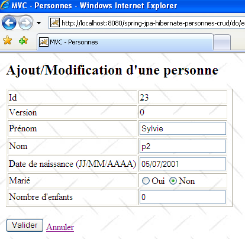
L’utilisateur U1 fait des modifications et valide :
 |
L’utilisateur U2 fait de même :
 |
L’utilisateur U2 revient à la liste des personnes avec le lien [Retour à la liste] du formulaire :

Il trouve la personne [Lemarchand] telle que U1 l’a modifiée (mariée, 2 enfants). Le n° de version de p2 a changé. Maintenant U2 supprime [p2] :
 |
U1 a toujours sa propre liste et veut modifier [p2] de nouveau :
 |
U1 utilise le lien [Retour à la liste] pour voir de quoi il retourne :

Il découvre qu’effectivement [p2] ne fait plus partie de la liste...
3.4.5. Version 2
Nous modifions légèrement la version précédente pour utiliser les archives des couches [service, dao, jpa] et non plus leurs codes source :
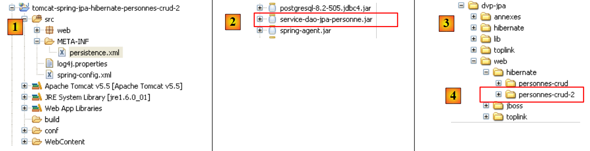 |
- en [1] : le nouveau projet Eclipse. On notera la disparition des paquetages [service, dao, entites]. Ceux-ci ont été encapsulés dans l'archive [service-dao-jpa-personne.jar] [2] placée dans [WEB-INF/lib].
- le dossier du projet est en [4]. On l'importera.
Il n'y a rien de plus à faire. Lorsque la nouvelle application web est lancée et qu'on demande la liste des personnes, on reçoit la réponse suivante :
 |
Hibernate ne trouve pas l'entité [Personne]. Pour résoudre ce problème, on est obligés de déclarer explicitement dans [persistence.xml] les entités gérées :
<?xml version="1.0" encoding="UTF-8"?>
<persistence version="1.0"
xmlns="http://java.sun.com/xml/ns/persistence"
xmlns:xsi="http://www.w3.org/2001/XMLSchema-instance"
xsi:schemaLocation="http://java.sun.com/xml/ns/persistence http://java.sun.com/xml/ns/persistence/persistence_1_0.xsd">
<persistence-unit name="jpa" transaction-type="RESOURCE_LOCAL">
<class>entites.Personne</class>
</persistence-unit>
</persistence>
- ligne 7 : l'entité Personne est déclarée.
Ceci fait, l'exception disparaît :
 |
3.4.6. Changer d'implémentation JPA
 |
- en [1] : le nouveau projet Eclipse
- en [2] : les bibliothèques Toplink ont remplacé les bibliothèques Hibernate
- le dossier du projet est en [4]. On l'importera.
Changer d'implémentation JPA n'implique que quelques changements dans le fichier [spring-config.xml]. Rien d'autre ne change. Les changements amenés dans le fichier [spring-config.xml] ont été expliqués au paragraphe 3.1.9 :
<?xml version="1.0" encoding="UTF-8"?>
<!-- la JVM doit être lancée avec l'argument -javaagent:C:\data\2006-2007\eclipse\dvp-jpa\lib\spring\spring-agent.jar
(à remplacer par le chemin exact de spring-agent.jar)-->
<beans xmlns="http://www.springframework.org/schema/beans" xmlns:xsi="http://www.w3.org/2001/XMLSchema-instance"
...
<bean id="entityManagerFactory" class="org.springframework.orm.jpa.LocalContainerEntityManagerFactoryBean">
<property name="dataSource" ref="dataSource" />
<property name="jpaVendorAdapter">
<bean class="org.springframework.orm.jpa.vendor.TopLinkJpaVendorAdapter">
...
<property name="databasePlatform" value="oracle.toplink.essentials.platform.database.MySQL4Platform" />
...
</bean>
...
</beans>
Peu de lignes doivent être changées pour passer d'Hibernate à Toplink :
- ligne 11 : l'implémentation JPA est désormais faite par Toplink
- ligne 13 : la propriété [databasePlatform] a une autre valeur qu'avec Hibernate : le nom d'une classe propre à Toplink. Où trouver ce nom a été expliqué au paragraphe 2.1.15.2.
C'est tout. On notera la facilité avec laquelle on peut changer de SGBD ou d'implémentation JPA avec Spring. On n'a quand même pas tout a fait fini. Lorsqu'on exécute l'application, on a une exception :
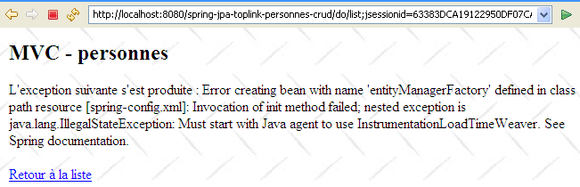 |
On reconnaîtra là un problème rencontré et décrit au paragraphe 3.1.9. Il est résolu en lançant la JVM avec un agent Spring. Pour cela, on modifie la configuration de lancement de Tomcat :
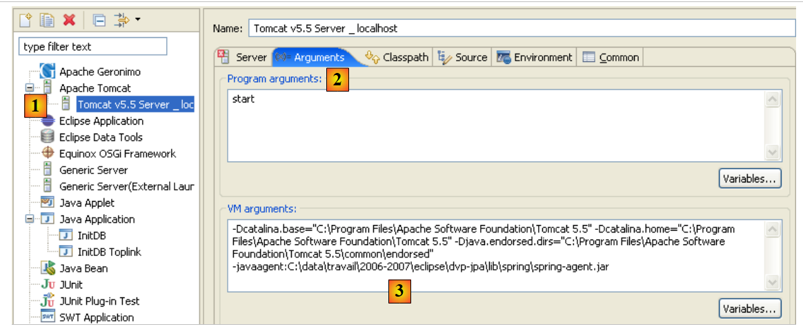 |
- en [1] : on a pris l'option [Run / Run...] pour modifier la configuration de Tomcat
- en [2] : on a sélectionné l'onglet [Arguments]
- en [3] : on a rajouté le paramètre -javaagent tel qu'il a été décrit au paragraphe 3.1.9, page 155.
Ceci fait, on peut demander la liste des personnes :

3.5. Autres exemples
Nous aurions voulu montrer un exemple web où le conteneur Spring était remplacé par le conteneur Jboss Ejb3 étudié au paragraphe 3.2 :
 |
- en [1] : le projet Eclipse
- en [3] : son emplacement dans le dossier des exemples. On l'importera.
Nous avons repris la configuration [jboss-config.xml, persistence.xml] décrite au paragraphe 3.2, puis avons modifié la méthode [init] du contrôleur [Application.java] de la façon suivante :
// init
@SuppressWarnings("unchecked")
public void init() throws ServletException {
try {
// on récupère les paramètres d'initialisation de la servlet
ServletConfig config = getServletConfig();
// on traite les autres paramètres d'initialisation
String valeur = null;
for (int i = 0; i < paramètres.length; i++) {
// valeur du paramètre
valeur = config.getInitParameter(paramètres[i]);
// paramètre présent ?
if (valeur == null) {
// on note l'erreur
erreursInitialisation.add("Le paramètre [" + paramètres[i] + "] n'a pas été initialisé");
} else {
// on mémorise la valeur du paramètre
params.put(paramètres[i], valeur);
}
}
// l'url de la vue [erreurs] a un traitement particulier
urlErreurs = config.getInitParameter("urlErreurs");
if (urlErreurs == null)
throw new ServletException("Le paramètre [urlErreurs] n'a pas été initialisé");
// configuration de l'application
// on démarre le conteneur EJB3 JBoss
// les fichiers de configuration ejb3-interceptors-aop.xml et embedded-jboss-beans.xml sont exploités
EJB3StandaloneBootstrap.boot(null);
// Création des beans propres à l'application
EJB3StandaloneBootstrap.deployXmlResource("META-INF/jboss-config.xml");
// on déploie tous les EJB trouvés dans le classpath de l'application
//EJB3StandaloneBootstrap.scanClasspath("WEB-INF/classes".replace("/", File.separator));
EJB3StandaloneBootstrap.scanClasspath();
// On initialise le contexte JNDI. Le fichier jndi.properties est exploité
InitialContext initialContext = new InitialContext();
// instanciation couche service
service = (IService) initialContext.lookup("Service/local");
// on vide la base
clean();
// on la remplit
fill();
} catch (Exception e) {
throw new ServletException(e);
}
}
- lignes 28-38 : on démarre le conteneur Ejb3. Celui-ci remplace le conteneur Spring.
- ligne 41 : on demande une référence sur la couche [service] de l'application.
A priori, ce sont les seules modifications à apporter. A l'exécution, on a l'erreur suivante :
 |
Je n'ai pas été capable de comprendre où était exactement le problème. L'exception rapportée par Tomcat semble dire que l'objet nommé "TransactionManager" a été demandé au service JNDI et que celui-ci ne le connaissait pas. Je laisse aux lecteurs le soin d'apporter une solution à ce problème. Si une solution est trouvée, elle sera intégrée au document.